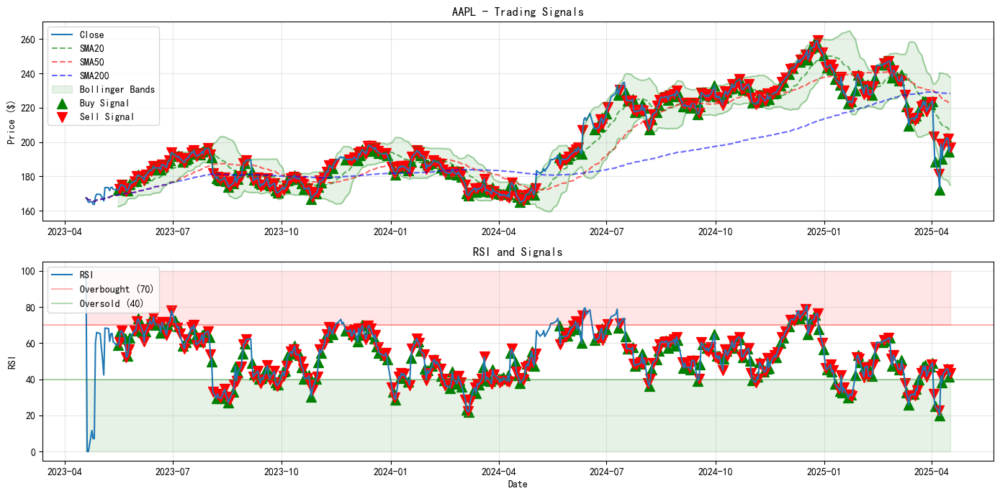
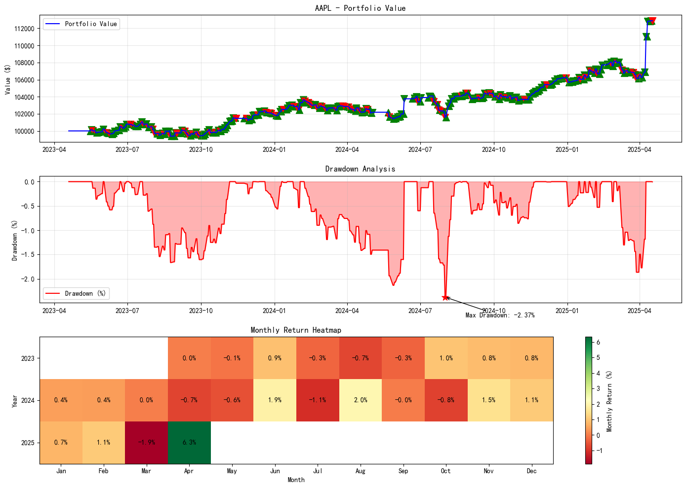
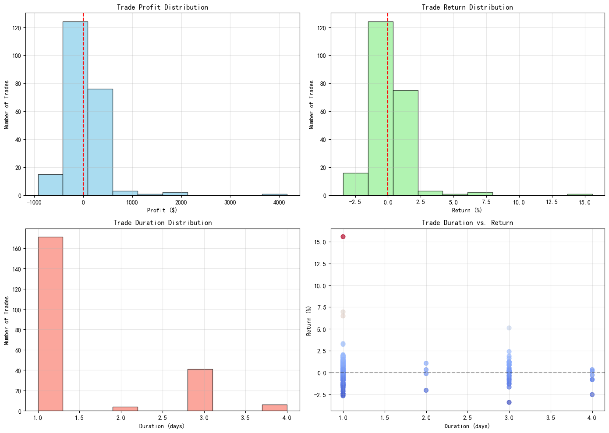

#!/usr/bin/env python
# -*- coding: utf-8 -*-
"""
Buy Low / Sell High Strategy with:
1) Multi-parameter Tuning & Advanced Visualization (From the Second Version)
2) Unified Exception Handling
3) analyze_trades Function (From the First Version, migrated and optimized)
"""
import functools
import ta
import pandas as pd
import numpy as np
import matplotlib.pyplot as plt
import shinybroker as sb # Replace with actual data interface if needed
import datetime
import itertools
from mpl_toolkits.mplot3d import Axes3D
import matplotlib
# Configure matplotlib settings
matplotlib.rcParams['font.family'] = ['SimHei'] # Adjust if needed
matplotlib.rcParams['axes.unicode_minus'] = False
current_date = pd.Timestamp.now()
print(f"Current date/time: {current_date}")
# --------------------------
# 0. Unified Exception Handling Decorator
# --------------------------
def safe(func):
"""Decorator for unified exception handling."""
@functools.wraps(func)
def wrapper(*args, **kwargs):
try:
return func(*args, **kwargs)
except Exception as e:
print(f"Error in {func.__name__}: {e}")
# 使用更简洁的方式返回空值
if 'backtest' in func.__name__:
return pd.DataFrame(), []
else:
return pd.DataFrame() if 'data' in func.__name__ or 'indicators' in func.__name__ else None
return wrapper
# --------------------------
# 1. Data Fetching
# --------------------------
@safe
def fetch_asset_data(symbol, duration="12 M", bar_size="1 day"):
"""
Fetch historical data for the specified symbol from shinybroker (or other data source).
Returns a DataFrame with columns: [Date, Open, High, Low, Close, Volume].
"""
print(f"Fetching data for {symbol}...")
asset = sb.Contract({
'symbol': symbol,
'secType': "STK",
'exchange': "SMART",
'currency': "USD"
})
data = sb.fetch_historical_data(contract=asset, barSizeSetting=bar_size, durationStr=duration)['hst_dta']
data.reset_index(inplace=True)
data['Date'] = pd.to_datetime(data['timestamp']).dt.tz_localize(None)
data = data[data['Date'] <= current_date]
data = data.rename(columns={'open': 'Open', 'high': 'High', 'low': 'Low', 'close': 'Close', 'volume': 'Volume'})
return data
@safe
def fetch_benchmark_data(benchmark="SPY", duration="12 M", bar_size="1 day"):
"""
Fetch benchmark data (typically SPY) for performance comparison.
Returns a Series of daily returns indexed by date.
"""
print(f"Fetching benchmark data for {benchmark}...")
try:
# Use same data fetching as assets
benchmark_data = fetch_asset_data(benchmark, duration, bar_size)
if benchmark_data.empty:
print("No benchmark data available.")
return pd.Series()
# Calculate daily returns
benchmark_data['Date'] = pd.to_datetime(benchmark_data['Date'])
benchmark_data.set_index('Date', inplace=True)
benchmark_returns = benchmark_data['Close'].pct_change().dropna()
return benchmark_returns
except Exception as e:
print(f"Error fetching benchmark data: {e}")
return pd.Series()
# --------------------------
# 2. Technical Indicators
# --------------------------
@safe
def add_indicators(df):
"""
Add various technical indicators (SMA, MACD, RSI, Bollinger Bands, ATR, OBV) to the DataFrame.
"""
print("Adding technical indicators...")
df = df.copy()
df['SMA20'] = ta.trend.sma_indicator(df["Close"], window=20, fillna=True)
df['SMA50'] = ta.trend.sma_indicator(df["Close"], window=50, fillna=True)
df['SMA200'] = ta.trend.sma_indicator(df["Close"], window=200, fillna=True)
df['MACD'] = ta.trend.macd_diff(df["Close"], window_slow=26, window_fast=12, window_sign=9, fillna=True)
df['RSI'] = ta.momentum.rsi(df["Close"], window=14, fillna=True)
bb = ta.volatility.BollingerBands(df["Close"], window=20, window_dev=2)
df['BB_Upper'] = bb.bollinger_hband()
df['BB_Lower'] = bb.bollinger_lband()
df['BB_Middle'] = bb.bollinger_mavg()
df['ATR'] = ta.volatility.average_true_range(df["High"], df["Low"], df["Close"], window=14, fillna=True)
df['OBV'] = ta.volume.on_balance_volume(df["Close"], df["Volume"], fillna=True)
return df
# --------------------------
# 3. Generate Trading Signals
# --------------------------
@safe
def generate_signals(df,
rsi_threshold=70,
atr_stop_multiplier=1.5,
atr_take_multiplier=3.5,
risk_per_trade=0.012,
min_size=0.10,
max_size=0.25):
"""
Strategy C+: Dynamic position sizing leaning towards Strategy B
- Position = clamp(dynamic risk position, 10%, 25%)
- Other logic same as Strategy C (Breakeven, Trailing, Entry conditions)
"""
df_signals = df.copy()
# Initialize
df_signals['Signal'] = 0
df_signals['Entry_Price'] = np.nan
df_signals['Stop_Loss'] = np.nan
df_signals['Take_Profit'] = np.nan
df_signals['Position_Size'] = 0.0
bb_th = 0.05
n = len(df_signals)
for i in range(1, n - 1):
# —— Position Management ——
if df_signals.iloc[i-1]['Signal'] == 1:
entry = df_signals.iloc[i-1]['Entry_Price']
atr = df_signals.iloc[i-1]['ATR']
stop = df_signals.iloc[i-1]['Stop_Loss']
take = df_signals.iloc[i-1]['Take_Profit']
# Breakeven
if df_signals.iloc[i]['High'] >= entry:
stop = max(stop, entry)
# Trailing
if df_signals.iloc[i]['High'] >= entry + 2 * atr:
stop = max(stop, entry + atr)
df_signals.iat[i, df_signals.columns.get_loc('Stop_Loss')] = stop
# Static SL/TP
if df_signals.iloc[i]['Low'] <= stop or df_signals.iloc[i]['High'] >= take:
df_signals.iat[i, df_signals.columns.get_loc('Signal')] = 0
continue
# —— Carry Forward Position ——
if df_signals.iloc[i-1]['Signal'] != 0:
for col in ['Signal', 'Entry_Price', 'Stop_Loss', 'Take_Profit', 'Position_Size']:
df_signals.iat[i, df_signals.columns.get_loc(col)] = df_signals.iloc[i-1][col]
continue
# —— New Entry Logic ——
close = df_signals.iloc[i]['Close']
rsi = df_signals.iloc[i]['RSI']
bb_lo = df_signals.iloc[i]['BB_Lower']
bb_md = df_signals.iloc[i]['BB_Middle']
sma20 = df_signals.iloc[i]['SMA20']
cond_main = (rsi < rsi_threshold and close <= bb_lo * (1 + bb_th))
cond_mid = (close <= bb_md * (1 + bb_th))
cond_oversold = (rsi < 30)
cond_sma20 = (close <= sma20 * 0.98)
if cond_main or cond_mid or cond_oversold or cond_sma20:
entry_price = df_signals.iloc[i+1]['Open']
atr_value = df_signals.iloc[i]['ATR']
if atr_value <= 0:
continue
# Dynamic risk position sizing
port_val = df_signals.iloc[i-1].get('Portfolio_Value', 100000)
risk_amt = risk_per_trade * port_val
dyn_pct = risk_amt / (atr_stop_multiplier * atr_value * entry_price)
# Clamp to [min_size, max_size]
pos_pct = max(min_size, min(dyn_pct, max_size))
df_signals.iat[i, df_signals.columns.get_loc('Signal')] = 1
df_signals.iat[i, df_signals.columns.get_loc('Entry_Price')] = entry_price
df_signals.iat[i, df_signals.columns.get_loc('Stop_Loss')] = entry_price - atr_stop_multiplier * atr_value
df_signals.iat[i, df_signals.columns.get_loc('Take_Profit')] = entry_price + atr_take_multiplier * atr_value
df_signals.iat[i, df_signals.columns.get_loc('Position_Size')] = pos_pct
return df_signals
# --------------------------
# 4. Backtesting
# --------------------------
@safe
def backtest_strategy(df_signals, verbose=True):
"""
Backtest the generated signals and compute portfolio values, returns, drawdown, etc.
"""
if verbose:
print("Backtesting strategy...")
df_backtest = df_signals.copy()
df_backtest['Portfolio_Value'] = 100000.0
df_backtest['Shares'] = 0.0
df_backtest['Trade_Profit'] = 0.0
df_backtest['Trade_Return'] = 0.0
df_backtest['Cash'] = 100000.0 # Initialize cash to initial capital
df_backtest['Equity'] = 0.0 # Initialize stock value to 0
current_position, entry_price, shares_held = 0, 0, 0
trades = []
winning_trades = 0
total_trades = 0
for i in range(1, len(df_backtest)):
# Copy forward portfolio value
df_backtest.iloc[i, df_backtest.columns.get_loc('Portfolio_Value')] = df_backtest.iloc[i-1]['Portfolio_Value']
df_backtest.iloc[i, df_backtest.columns.get_loc('Cash')] = df_backtest.iloc[i-1]['Cash']
df_backtest.iloc[i, df_backtest.columns.get_loc('Equity')] = df_backtest.iloc[i-1]['Equity']
# Enter position
if df_backtest.iloc[i]['Signal'] != 0 and current_position == 0:
current_position = df_backtest.iloc[i]['Signal']
entry_price = df_backtest.iloc[i]['Entry_Price']
try:
position_value = df_backtest.iloc[i-1]['Portfolio_Value'] * df_backtest.iloc[i]['Position_Size']
shares_held = position_value / entry_price
# Update cash and equity values
df_backtest.iloc[i, df_backtest.columns.get_loc('Cash')] = df_backtest.iloc[i]['Cash'] - position_value
df_backtest.iloc[i, df_backtest.columns.get_loc('Equity')] = shares_held * entry_price
except Exception as e:
if verbose:
print(f"Error calculating shares at index {i}: {e}")
continue
df_backtest.iloc[i, df_backtest.columns.get_loc('Shares')] = shares_held
# Exit position
elif df_backtest.iloc[i]['Signal'] == 0 and current_position != 0:
# Check if stop loss or take profit is triggered, use actual trigger price
exit_price = df_backtest.iloc[i]['Close'] # Default to using closing price
exit_reason = "Unknown"
# Stop loss check - if daily low touches or falls below stop loss price, use stop loss price to exit
if df_backtest.iloc[i]['Low'] <= df_backtest.iloc[i-1]['Stop_Loss']:
exit_price = df_backtest.iloc[i-1]['Stop_Loss']
exit_reason = "Stop_Loss"
if verbose and i % 20 == 0:
print(f"Stop loss triggered: exit at ${exit_price:.2f}")
# Take profit check - if daily high touches or exceeds take profit price, use take profit price to exit
elif df_backtest.iloc[i]['High'] >= df_backtest.iloc[i-1]['Take_Profit']:
exit_price = df_backtest.iloc[i-1]['Take_Profit']
exit_reason = "Take_Profit"
if verbose and i % 20 == 0:
print(f"Take profit triggered: exit at ${exit_price:.2f}")
# RSI check
elif 'RSI' in df_backtest.columns and df_backtest.iloc[i]['RSI'] > 70:
exit_reason = "RSI_Overbought"
# SMA breakout check
elif 'SMA50' in df_backtest.columns and df_backtest.iloc[i]['Close'] < df_backtest.iloc[i]['SMA50']:
exit_reason = "SMA_Breakdown"
trade_profit = (exit_price - entry_price) * shares_held if current_position == 1 else 0
new_value = df_backtest.iloc[i-1]['Portfolio_Value'] + trade_profit
df_backtest.iloc[i, df_backtest.columns.get_loc('Portfolio_Value')] = float(new_value)
df_backtest.iloc[i, df_backtest.columns.get_loc('Trade_Profit')] = float(trade_profit)
trade_return = trade_profit / (entry_price * shares_held) if shares_held > 0 else 0
df_backtest.iloc[i, df_backtest.columns.get_loc('Trade_Return')] = float(trade_return)
# Update cash and equity values
cash_after_exit = df_backtest.iloc[i]['Cash'] + (exit_price * shares_held)
df_backtest.iloc[i, df_backtest.columns.get_loc('Cash')] = cash_after_exit
df_backtest.iloc[i, df_backtest.columns.get_loc('Equity')] = 0.0 # Equity is 0 after position is closed
trades.append({
'Entry_Date': df_backtest.iloc[i-1]['Date'],
'Exit_Date': df_backtest.iloc[i]['Date'],
'Entry_Price': entry_price,
'Exit_Price': exit_price,
'Shares': shares_held,
'Profit': trade_profit,
'Return': trade_return,
'Duration': (df_backtest.iloc[i]['Date'] - df_backtest.iloc[i-1]['Date']).days,
'Exit_Reason': exit_reason
})
total_trades += 1
if trade_profit > 0:
winning_trades += 1
# Reset position
current_position, entry_price, shares_held = 0, 0, 0
df_backtest.iloc[i, df_backtest.columns.get_loc('Shares')] = 0.0
# If continuing the same position
elif df_backtest.iloc[i]['Signal'] != 0 and current_position != 0:
df_backtest.iloc[i, df_backtest.columns.get_loc('Shares')] = shares_held
# Update equity based on latest price
current_equity = shares_held * df_backtest.iloc[i]['Close']
df_backtest.iloc[i, df_backtest.columns.get_loc('Equity')] = current_equity
# Update portfolio value
df_backtest.iloc[i, df_backtest.columns.get_loc('Portfolio_Value')] = df_backtest.iloc[i]['Cash'] + current_equity
# Add required columns for print_ledger function
df_backtest['Account_Value'] = df_backtest['Portfolio_Value']
# Simple summary without detailed calculations
if verbose:
win_rate = winning_trades / total_trades if total_trades > 0 else 0
print(f"\nBacktest Summary: {total_trades} trades completed with {win_rate:.2%} win rate")
return df_backtest, trades
# --------------------------
# 5. analyze_trades (migrated & optimized from the First Version)
# --------------------------
@safe
def analyze_trades(trades, verbose=True):
"""
Detailed analysis of all completed trades:
- Number of trades, Win rate
- Average profit, average win, average loss
- Profit factor
- Consecutive wins/losses
- Holding duration stats
- Recent trades summary
"""
if not trades:
if verbose:
print("No trade records to analyze.")
return None
trades_df = pd.DataFrame(trades)
total_trades = len(trades_df)
win_count = len(trades_df[trades_df['Profit'] > 0])
loss_count = len(trades_df[trades_df['Profit'] <= 0])
win_rate = win_count / total_trades if total_trades else 0
avg_profit = trades_df['Profit'].mean()
avg_win = trades_df.loc[trades_df['Profit'] > 0, 'Profit'].mean() if win_count > 0 else 0
avg_loss = trades_df.loc[trades_df['Profit'] <= 0, 'Profit'].mean() if loss_count > 0 else 0
# Profit factor = sum of all wins / sum of all losses (absolute value)
total_win_amount = trades_df.loc[trades_df['Profit'] > 0, 'Profit'].sum()
total_loss_amount = trades_df.loc[trades_df['Profit'] < 0, 'Profit'].sum()
profit_factor = abs(total_win_amount / total_loss_amount) if total_loss_amount != 0 else float('inf')
# Duration
trades_df['Duration'] = (trades_df['Exit_Date'] - trades_df['Entry_Date']).dt.days
avg_duration = trades_df['Duration'].mean()
max_duration = trades_df['Duration'].max()
min_duration = trades_df['Duration'].min()
# Analyze consecutive wins/losses
trade_results = [1 if p > 0 else 0 for p in trades_df['Profit']]
# Calculate max consecutive wins (inline function)
max_consecutive_wins = 0
current_count = 0
for v in trade_results:
if v == 1:
current_count += 1
max_consecutive_wins = max(max_consecutive_wins, current_count)
else:
current_count = 0
# Calculate max consecutive losses (inline function)
max_consecutive_losses = 0
current_count = 0
for v in trade_results:
if v == 0:
current_count += 1
max_consecutive_losses = max(max_consecutive_losses, current_count)
else:
current_count = 0
if verbose:
print("\n=== Detailed Trade Analysis ===")
print(f"Total Trades: {total_trades}")
print(f"Win Rate: {win_rate:.2%} (Wins={win_count}, Losses={loss_count})")
print(f"Avg Trade Profit: {avg_profit:.2f}")
print(f"Avg Win: {avg_win:.2f}, Avg Loss: {avg_loss:.2f}")
print(f"Profit Factor: {profit_factor:.2f}")
print(f"Avg Holding Duration: {avg_duration:.1f} days (Max={max_duration}d, Min={min_duration}d)")
print(f"Max Consecutive Wins: {max_consecutive_wins}")
print(f"Max Consecutive Losses: {max_consecutive_losses}")
# Recent trades
print("\nRecent 10 Trades (most recent first):")
recent_trades = trades_df.tail(10).sort_values('Entry_Date', ascending=False)
for i, trade in recent_trades.iterrows():
result_str = "Profit" if trade['Profit'] > 0 else "Loss"
print(f" {trade['Entry_Date'].date()} -> {trade['Exit_Date'].date()} ({trade['Duration']} days): "
f"${trade['Entry_Price']:.2f} -> ${trade['Exit_Price']:.2f}, {result_str} ${abs(trade['Profit']):.2f}, "
f"Return={trade['Return']*100:.2f}%")
return trades_df
# --------------------------
# 6. Parameter Optimization & Visualization
# --------------------------
@safe
def optimize_strategy(df, param_grid=None, min_trades=10, drawdown_penalty=0.5):
"""
Grid-search parameter optimization with:
- Extended parameter range
- Skip combinations with < min_trades trades
- Custom scoring: Sharpe - drawdown_penalty * abs(max_drawdown)
"""
print("Starting enhanced parameter optimization...")
# 1) Default richer parameter grid
if param_grid is None:
param_grid = {
'rsi_threshold': [30, 35, 40, 45, 50, 55],
'atr_stop_multiplier': [1.0, 1.5, 2.0, 2.5, 3.0],
'atr_take_multiplier': [2.0, 3.0, 4.0, 5.0, 6.0]
}
# 2) Scoring function: Sharpe minus drawdown penalty
def score_fn(res):
return res['sharpe_ratio'] - drawdown_penalty * abs(res['max_drawdown'] / 100)
best_score = -float('inf')
best_params = None
all_results = []
# Full traversal
for rsi_thresh in param_grid['rsi_threshold']:
for atr_stop in param_grid['atr_stop_multiplier']:
for atr_take in param_grid['atr_take_multiplier']:
# Ensure take profit > stop loss
if atr_take <= atr_stop:
continue
# Generate signals and backtest
signals = generate_signals(df, rsi_thresh, atr_stop, atr_take)
backtested, trades = backtest_strategy(signals, verbose=False)
# Filter out trades with too few trades
if len(trades) < min_trades:
continue
# Calculate metrics
initial = backtested['Portfolio_Value'].iloc[0]
final = backtested['Portfolio_Value'].iloc[-1]
total_ret = (final / initial - 1) * 100
days = (backtested['Date'].iloc[-1] - backtested['Date'].iloc[0]).days
years = days / 365 if days>0 else 0
ann_ret = ((1 + total_ret/100) ** (1/years) - 1) * 100 if years>0 else 0
backtested['Peak'] = backtested['Portfolio_Value'].cummax()
backtested['Drawdown'] = (backtested['Portfolio_Value'] / backtested['Peak'] - 1) * 100
max_dd = backtested['Drawdown'].min()
returns = backtested['Portfolio_Value'].pct_change().dropna()
sharpe = (ann_ret/100) / (returns.std() * np.sqrt(252)) if returns.std()>0 else 0
win_rate = len([t for t in trades if t['Profit']>0]) / len(trades)
res = {
'rsi_threshold': rsi_thresh,
'atr_stop_multiplier': atr_stop,
'atr_take_multiplier': atr_take,
'total_trades': len(trades),
'win_rate': win_rate,
'total_return': total_ret,
'annualized_return': ann_ret,
'max_drawdown': max_dd,
'sharpe_ratio': sharpe
}
all_results.append(res)
# 3) Use custom score to select best
s = score_fn(res)
if s > best_score:
best_score = s
best_params = (rsi_thresh, atr_stop, atr_take)
# Output results
results_df = pd.DataFrame(all_results)
if best_params:
print(f"\nEnhanced Best Parameters: RSI={best_params[0]}, "
f"ATR Stop={best_params[1]}, ATR Take={best_params[2]}, Score={best_score:.2f}")
else:
print("No valid parameter combination found under constraints.")
visualize_optimization_results(results_df)
return best_params, results_df
def visualize_optimization_results(results_df):
"""
Visualization of optimization results:
1) Heatmap of Sharpe Ratio by RSI vs. ATR Stop
2) Scatter of RSI vs. ATR Take (color=annualized return, size=win rate)
3) Correlation Heatmap
4) Risk-Return Scatter (max drawdown vs. total return), highlighting best Sharpe
"""
if results_df is None or results_df.empty or len(results_df) < 2:
print("Not enough optimization results for visualization.")
return
print("Parameter optimization results available but visualization disabled.")
print(f"Best parameters from optimization process (Note: optimization Sharpe differs from final backtest): ", end="")
if 'sharpe_ratio' in results_df.columns and not results_df.empty:
best_idx = results_df['sharpe_ratio'].idxmax()
best_row = results_df.loc[best_idx]
print(f"RSI={best_row['rsi_threshold']}, "
f"ATR Stop={best_row['atr_stop_multiplier']}, "
f"ATR Take={best_row['atr_take_multiplier']}, "
f"Optimization Sharpe={best_row['sharpe_ratio']:.2f}")
else:
print("No valid Sharpe ratio data found.")
# --------------------------
# 7. Comprehensive Visualization
# --------------------------
@safe
def visualize_results(df, df_backtest, trades, symbol):
"""
Plot:
- Price/MAs/Bollinger + signals + RSI
- Portfolio Value & Drawdown
- Monthly returns heatmap
- Trade distribution charts (profit, return, duration, etc.)
"""
print("Generating comprehensive strategy visualizations...")
trades_df = pd.DataFrame(trades) if trades else pd.DataFrame()
try:
# --- Chart 1: Price, MAs, Bollinger, RSI, signals
plt.figure(figsize=(14, 7))
# 1A) Price + signals
plt.subplot(2, 1, 1)
plt.plot(df_backtest['Date'], df_backtest['Close'], label='Close')
plt.plot(df_backtest['Date'], df_backtest['SMA20'], 'g--', label='SMA20', alpha=0.6)
plt.plot(df_backtest['Date'], df_backtest['SMA50'], 'r--', label='SMA50', alpha=0.6)
plt.plot(df_backtest['Date'], df_backtest['SMA200'], 'b--', label='SMA200', alpha=0.6)
plt.plot(df_backtest['Date'], df_backtest['BB_Upper'], 'g-', alpha=0.3)
plt.plot(df_backtest['Date'], df_backtest['BB_Lower'], 'g-', alpha=0.3)
plt.fill_between(df_backtest['Date'], df_backtest['BB_Upper'],
df_backtest['BB_Lower'], color='g', alpha=0.1, label='Bollinger Bands')
buy_signals = df_backtest[df_backtest['Signal'] == 1]
plt.scatter(buy_signals['Date'], buy_signals['Close'], marker='^', color='g', s=100, label='Buy Signal')
exit_signals = df_backtest[(df_backtest['Signal'] == 0) & (df_backtest['Trade_Profit'] != 0)]
plt.scatter(exit_signals['Date'], exit_signals['Close'], marker='v', color='r', s=100, label='Sell Signal')
plt.title(f'{symbol} - Trading Signals')
plt.ylabel('Price ($)')
plt.legend(loc='upper left')
plt.grid(alpha=0.3)
# 1B) RSI
plt.subplot(2, 1, 2)
plt.plot(df_backtest['Date'], df_backtest['RSI'], label='RSI')
plt.axhline(70, color='r', linestyle='-', alpha=0.3, label='Overbought (70)')
plt.axhline(40, color='g', linestyle='-', alpha=0.3, label='Oversold (40)')
plt.fill_between(df_backtest['Date'], 0, 40, color='g', alpha=0.1)
plt.fill_between(df_backtest['Date'], 70, 100, color='r', alpha=0.1)
if not buy_signals.empty:
plt.scatter(buy_signals['Date'], buy_signals['RSI'], marker='^', color='g', s=100)
if not exit_signals.empty:
plt.scatter(exit_signals['Date'], exit_signals['RSI'], marker='v', color='r', s=100)
plt.title('RSI and Signals')
plt.xlabel('Date')
plt.ylabel('RSI')
plt.legend(loc='upper left')
plt.grid(alpha=0.3)
plt.tight_layout()
chart1_filename = f'{symbol}_trading_signals.png'
plt.savefig(chart1_filename, dpi=300, bbox_inches='tight')
plt.show()
print(f"Chart 1 generated (Price & RSI with signals) and saved to {chart1_filename}")
plt.close()
# --- Chart 2: Portfolio Value & Drawdown & Monthly Returns
plt.figure(figsize=(14, 10))
# 2A) Portfolio
plt.subplot(3, 1, 1)
plt.plot(df_backtest['Date'], df_backtest['Portfolio_Value'], label='Portfolio Value', color='blue')
for trade in trades:
# Mark entry
plt.scatter(trade['Entry_Date'],
df_backtest[df_backtest['Date'] == trade['Entry_Date']]['Portfolio_Value'].values[0],
marker='^', color='g', s=100)
# Mark exit
marker_color = 'g' if trade['Profit'] > 0 else 'r'
plt.scatter(trade['Exit_Date'],
df_backtest[df_backtest['Date'] == trade['Exit_Date']]['Portfolio_Value'].values[0],
marker='v', color=marker_color, s=100)
plt.title(f'{symbol} - Portfolio Value')
plt.ylabel('Value ($)')
plt.legend()
plt.grid(alpha=0.3)
# 2B) Drawdown
plt.subplot(3, 1, 2)
df_backtest['Peak'] = df_backtest['Portfolio_Value'].cummax()
df_backtest['Drawdown'] = (df_backtest['Portfolio_Value'] / df_backtest['Peak'] - 1) * 100
plt.fill_between(df_backtest['Date'], 0, df_backtest['Drawdown'], color='r', alpha=0.3)
plt.plot(df_backtest['Date'], df_backtest['Drawdown'], 'r', label='Drawdown (%)')
max_dd_idx = df_backtest['Drawdown'].idxmin()
max_dd = df_backtest.iloc[max_dd_idx]['Drawdown']
max_dd_date = df_backtest.iloc[max_dd_idx]['Date']
plt.scatter([max_dd_date], [max_dd], color='r', s=100, marker='*')
plt.annotate(f'Max Drawdown: {max_dd:.2f}%', xy=(max_dd_date, max_dd), xytext=(30, -30),
textcoords='offset points', arrowprops=dict(arrowstyle='->', color='black'))
plt.title('Drawdown Analysis')
plt.ylabel('Drawdown (%)')
plt.legend()
plt.grid(alpha=0.3)
# 2C) Monthly Returns Heatmap
plt.subplot(3, 1, 3)
df_backtest['Daily_Return'] = df_backtest['Portfolio_Value'].pct_change()
df_backtest['Year'] = df_backtest['Date'].dt.year
df_backtest['Month'] = df_backtest['Date'].dt.month
monthly_returns = df_backtest.groupby(['Year', 'Month'])['Daily_Return'].apply(lambda x: (1 + x).prod() - 1).reset_index()
monthly_returns['Monthly_Return_%'] = monthly_returns['Daily_Return'] * 100
pivot_mr = monthly_returns.pivot(index='Year', columns='Month', values='Monthly_Return_%')
im = plt.imshow(pivot_mr, cmap='RdYlGn', aspect='auto')
plt.colorbar(im, label='Monthly Return (%)')
plt.title('Monthly Return Heatmap')
plt.xlabel('Month')
plt.ylabel('Year')
plt.xticks(range(12), ['Jan','Feb','Mar','Apr','May','Jun','Jul','Aug','Sep','Oct','Nov','Dec'])
plt.yticks(range(len(pivot_mr.index)), pivot_mr.index)
for i in range(pivot_mr.shape[0]):
for j in range(pivot_mr.shape[1]):
val = pivot_mr.iloc[i, j]
if not np.isnan(val):
plt.text(j, i, f'{val:.1f}%', ha='center', va='center',
color='black' if abs(val) < 8 else 'white')
plt.tight_layout()
chart2_filename = f'{symbol}_portfolio_performance.png'
plt.savefig(chart2_filename, dpi=300, bbox_inches='tight')
plt.show()
print(f"Chart 2 generated (Portfolio value, Drawdown, Monthly returns) and saved to {chart2_filename}")
plt.close()
# --- Chart 3: Trade-level distribution analysis
if not trades_df.empty:
plt.figure(figsize=(14, 10))
plt.subplot(2, 2, 1)
plt.hist(trades_df['Profit'], bins=10, alpha=0.7, color='skyblue', edgecolor='black')
plt.axvline(0, color='r', linestyle='--')
plt.title('Trade Profit Distribution')
plt.xlabel('Profit ($)')
plt.ylabel('Number of Trades')
plt.grid(alpha=0.3)
plt.subplot(2, 2, 2)
plt.hist(trades_df['Return'] * 100, bins=10, alpha=0.7, color='lightgreen', edgecolor='black')
plt.axvline(0, color='r', linestyle='--')
plt.title('Trade Return Distribution')
plt.xlabel('Return (%)')
plt.ylabel('Number of Trades')
plt.grid(alpha=0.3)
# Duration-based stats
if 'Entry_Date' in trades_df.columns and 'Exit_Date' in trades_df.columns:
trades_df['Duration'] = (trades_df['Exit_Date'] - trades_df['Entry_Date']).dt.days
plt.subplot(2, 2, 3)
plt.hist(trades_df['Duration'], bins=10, alpha=0.7, color='salmon', edgecolor='black')
plt.title('Trade Duration Distribution')
plt.xlabel('Duration (days)')
plt.ylabel('Number of Trades')
plt.grid(alpha=0.3)
plt.subplot(2, 2, 4)
scatter = plt.scatter(trades_df['Duration'], trades_df['Return'] * 100,
c=trades_df['Profit'], cmap='coolwarm', alpha=0.7, s=50)
plt.axhline(0, color='k', linestyle='--', alpha=0.3)
plt.title('Trade Duration vs. Return')
plt.xlabel('Duration (days)')
plt.ylabel('Return (%)')
plt.grid(alpha=0.3)
plt.tight_layout()
chart3_filename = f'{symbol}_trade_analysis.png'
plt.savefig(chart3_filename, dpi=300, bbox_inches='tight')
plt.show()
print(f"Chart 3 generated (Trade distribution) and saved to {chart3_filename}")
plt.close()
else:
print("No trade data for detailed trade analysis.")
except Exception as e:
print(f"Error in visualization: {e}")
plt.close('all') # Ensure all plots are closed on error
# --------------------------
# 8. Advanced Metrics Visualization
# --------------------------
@safe
def visualize_advanced_metrics(df_backtest, window=30):
"""
Visualize:
- Daily returns distribution
- Drawdown distribution
- Rolling annualized return & rolling annualized volatility
- Rolling Sharpe ratio
"""
if 'Portfolio_Value' not in df_backtest.columns or df_backtest.empty:
print("No portfolio data available for advanced metrics.")
return
print("Advanced metrics visualization disabled.")
# Calculate and print summary statistics instead
if 'Daily_Return' not in df_backtest.columns:
df_backtest['Daily_Return'] = df_backtest['Portfolio_Value'].pct_change()
if 'Drawdown' not in df_backtest.columns:
df_backtest['Peak'] = df_backtest['Portfolio_Value'].cummax()
df_backtest['Drawdown'] = (df_backtest['Portfolio_Value'] / df_backtest['Peak'] - 1) * 100
# Print some basic statistics
daily_returns = df_backtest['Daily_Return'].dropna()
print(f"Daily Returns - Mean: {daily_returns.mean()*100:.2f}%, Std Dev: {daily_returns.std()*100:.2f}%")
print(f"Max Drawdown: {df_backtest['Drawdown'].min():.2f}%")
# --------------------------
# 8.1 Trade Blotter and Ledger
# --------------------------
@safe
def print_blotter(trades, detailed=False):
"""
Print trade record book showing detailed information for all trades.
Includes: entry date, exit date, holding days, prices, shares, profit/loss, and return rate.
"""
if not trades:
print("No trades to display in blotter.")
return
# Convert to DataFrame for analysis
trades_df = pd.DataFrame(trades)
# Calculate key statistics
total_trades = len(trades_df)
win_trades = len(trades_df[trades_df['Profit'] > 0])
loss_trades = total_trades - win_trades
win_rate = (win_trades / total_trades * 100) if total_trades > 0 else 0
total_profit = trades_df['Profit'].sum()
avg_profit = trades_df['Profit'].mean()
avg_profit_win = trades_df[trades_df['Profit'] > 0]['Profit'].mean() if win_trades > 0 else 0
avg_loss = trades_df[trades_df['Profit'] <= 0]['Profit'].mean() if loss_trades > 0 else 0
max_profit = trades_df['Profit'].max() if not trades_df.empty else 0
max_loss = trades_df['Profit'].min() if not trades_df.empty else 0
avg_hold_days = trades_df['Duration'].mean() if 'Duration' in trades_df.columns else None
# Calculate profit-loss ratio
profit_loss_ratio = abs(avg_profit_win / avg_loss) if avg_loss != 0 else float('inf')
# Calculate ROI
initial_capital = 100000 # Assumed $100,000 initial capital
roi = (total_profit / initial_capital) * 100
# Print trade blotter
print("\n" + "="*50)
print(" BLOTTER (TRADE RECORD) ")
print("="*50)
print("{:<12} {:<12} {:<8} {:<10} {:<10} {:<10} {:<12} {:<10} {:<15}".format(
"Entry Date", "Exit Date", "Days", "Entry", "Exit", "Shares", "Profit/Loss", "Return", "Exit Reason"
))
print("-" * 110)
# Sort by entry date
trades_df = trades_df.sort_values('Entry_Date')
for _, trade in trades_df.iterrows():
entry_date = trade['Entry_Date'].strftime('%Y-%m-%d')
exit_date = trade['Exit_Date'].strftime('%Y-%m-%d') if pd.notna(trade['Exit_Date']) else 'Open'
hold_days = trade['Duration'] if 'Duration' in trade else (
(trade['Exit_Date'] - trade['Entry_Date']).days if pd.notna(trade['Exit_Date']) else 'N/A'
)
entry_price = f"${trade['Entry_Price']:.2f}"
exit_price = f"${trade['Exit_Price']:.2f}" if pd.notna(trade['Exit_Price']) else 'N/A'
shares = int(trade['Shares'])
profit_loss = trade['Profit']
profit_loss_str = f"${profit_loss:.2f}"
return_pct = trade['Return'] * 100
return_str = f"{return_pct:.2f}%"
exit_reason = trade.get('Exit_Reason', 'N/A')
print("{:<12} {:<12} {:<8} {:<10} {:<10} {:<10} {:<12} {:<10} {:<15}".format(
entry_date, exit_date, hold_days, entry_price, exit_price, shares,
profit_loss_str, return_str, exit_reason
))
print("-" * 110)
# Analyze exit reasons
if 'Exit_Reason' in trades_df.columns and not trades_df.empty:
reason_stats = trades_df.groupby('Exit_Reason').agg({
'Profit': ['count', 'mean', 'sum'],
'Return': 'mean',
'Duration': 'mean'
})
reason_stats.columns = ['Count', 'Avg Profit', 'Total Profit', 'Avg Return', 'Avg Duration']
print("\n===== EXIT REASON ANALYSIS =====")
for reason, row in reason_stats.iterrows():
win_count = len(trades_df[(trades_df['Exit_Reason'] == reason) & (trades_df['Profit'] > 0)])
win_rate_reason = (win_count / row['Count']) * 100
print(f"{reason}: {row['Count']} trades, Win Rate: {win_rate_reason:.1f}%, "
f"Avg Profit: ${row['Avg Profit']:.2f}, Total: ${row['Total Profit']:.2f}, "
f"Avg Duration: {row['Avg Duration']:.1f} days")
# Print summary statistics
print("\n===== TRADE STATISTICS =====")
print(f"Total Trades: {total_trades}")
print(f"Winning Trades: {win_trades} ({win_rate:.1f}%)")
print(f"Losing Trades: {loss_trades} ({100-win_rate:.1f}%)")
print(f"Total Profit/Loss: ${total_profit:.2f}")
print(f"Average Profit/Loss: ${avg_profit:.2f}")
print(f"Average Win: ${avg_profit_win:.2f}")
print(f"Average Loss: ${avg_loss:.2f}")
print(f"Profit/Loss Ratio: {profit_loss_ratio:.2f}")
print(f"Largest Win: ${max_profit:.2f}")
print(f"Largest Loss: ${max_loss:.2f}")
if avg_hold_days is not None:
print(f"Average Holding Period: {avg_hold_days:.1f} days")
print(f"Return on Investment (ROI): {roi:.2f}%")
# Calculate best and worst trades
if not trades_df.empty:
best_trade = trades_df.loc[trades_df['Profit'].idxmax()]
worst_trade = trades_df.loc[trades_df['Profit'].idxmin()]
print("\n===== BEST TRADE =====")
print(f"Date: {best_trade['Entry_Date'].strftime('%Y-%m-%d')} to {best_trade['Exit_Date'].strftime('%Y-%m-%d')}")
print(f"Holding Days: {best_trade.get('Duration', 'N/A')} days")
print(f"Entry Price: ${best_trade['Entry_Price']:.2f}, Exit Price: ${best_trade['Exit_Price']:.2f}")
print(f"Shares: {int(best_trade['Shares'])}")
print(f"Profit: ${best_trade['Profit']:.2f} ({best_trade['Return']*100:.2f}%)")
print(f"Exit Reason: {best_trade.get('Exit_Reason', 'N/A')}")
print("\n===== WORST TRADE =====")
print(f"Date: {worst_trade['Entry_Date'].strftime('%Y-%m-%d')} to {worst_trade['Exit_Date'].strftime('%Y-%m-%d')}")
print(f"Holding Days: {worst_trade.get('Duration', 'N/A')} days")
print(f"Entry Price: ${worst_trade['Entry_Price']:.2f}, Exit Price: ${worst_trade['Exit_Price']:.2f}")
print(f"Shares: {int(worst_trade['Shares'])}")
print(f"Loss: ${worst_trade['Profit']:.2f} ({worst_trade['Return']*100:.2f}%)")
print(f"Exit Reason: {worst_trade.get('Exit_Reason', 'N/A')}")
# If detailed flag is true, add more detailed analysis
if detailed and total_trades > 0:
print("\n===== DETAILED ANALYSIS =====")
# Group by month/week
if 'Entry_Date' in trades_df.columns:
trades_df['Month'] = trades_df['Entry_Date'].dt.strftime('%Y-%m')
monthly_profit = trades_df.groupby('Month')['Profit'].sum()
print("\nMonthly Profit/Loss:")
for month, profit in monthly_profit.items():
print(f"{month}: ${profit:.2f}")
# Analyze consecutive wins/losses
trade_results = [1 if p > 0 else 0 for p in trades_df['Profit']]
# Calculate max consecutive wins (inline function)
max_consecutive_wins = 0
current_count = 0
for v in trade_results:
if v == 1:
current_count += 1
max_consecutive_wins = max(max_consecutive_wins, current_count)
else:
current_count = 0
# Calculate max consecutive losses (inline function)
max_consecutive_losses = 0
current_count = 0
for v in trade_results:
if v == 0:
current_count += 1
max_consecutive_losses = max(max_consecutive_losses, current_count)
else:
current_count = 0
print(f"\nMax Consecutive Wins: {max_consecutive_wins}")
print(f"Max Consecutive Losses: {max_consecutive_losses}")
# Show holding days distribution
if 'Duration' in trades_df.columns:
duration_counts = trades_df['Duration'].value_counts().sort_index()
print("\nHolding Period Distribution:")
for days, count in duration_counts.items():
print(f" {days} days: {count} trades ({count/total_trades*100:.1f}%)")
@safe
def print_ledger(portfolio, interval='D'):
"""
Print account status and performance ledger, aggregated by specified time interval
('D' for daily, 'W' for weekly, 'M' for monthly).
"""
if portfolio.empty:
print("Portfolio data is empty, cannot generate ledger")
return
# Check if required columns exist
required_cols = ['Date', 'Account_Value', 'Cash', 'Equity']
if not all(col in portfolio.columns for col in required_cols):
print("Missing necessary columns to generate ledger")
print(f"Available columns: {portfolio.columns.tolist()}")
missing = [col for col in required_cols if col not in portfolio.columns]
print(f"Missing columns: {missing}")
return
try:
# Ensure date format is correct
if not pd.api.types.is_datetime64_any_dtype(portfolio['Date']):
portfolio['Date'] = pd.to_datetime(portfolio['Date'])
# Set date as index for resampling
portfolio_resampled = portfolio.copy()
portfolio_resampled.set_index('Date', inplace=True)
# Resample by specified interval
if interval in ['W', 'M']:
portfolio_resampled = portfolio_resampled.resample(interval).last()
# Reset index for output
portfolio_resampled.reset_index(inplace=True)
# Calculate cumulative return
starting_value = portfolio_resampled['Account_Value'].iloc[0]
portfolio_resampled['Cumulative_Return'] = ((portfolio_resampled['Account_Value'] / starting_value) - 1) * 100
# Calculate drawdown
portfolio_resampled['High_Value'] = portfolio_resampled['Account_Value'].cummax()
portfolio_resampled['Drawdown'] = (portfolio_resampled['Account_Value'] / portfolio_resampled['High_Value'] - 1) * 100
# Print account ledger
print("\n" + "="*50)
print(" LEDGER (ACCOUNT BOOK) ")
print("="*50)
period_label = "Daily" if interval == 'D' else ("Weekly" if interval == 'W' else "Monthly")
print(f"Period: {period_label}")
print("{:<12} {:<15} {:<15} {:<15} {:<15} {:<15}".format(
"Date", "Account($)", "Cash($)", "Equity($)", "Drawdown(%)", "Return(%)"
))
print("-" * 90)
# Output each row
for _, row in portfolio_resampled.iterrows():
print("{:<12} {:<15.2f} {:<15.2f} {:<15.2f} {:<15.2f} {:<15.2f}".format(
row['Date'].strftime('%Y-%m-%d'),
row['Account_Value'],
row['Cash'],
row['Equity'],
row['Drawdown'],
row['Cumulative_Return']
))
print("-" * 90)
# Print summary statistics
max_drawdown = portfolio_resampled['Drawdown'].min()
final_return = portfolio_resampled['Cumulative_Return'].iloc[-1]
print(f"Initial Account Value: ${starting_value:.2f}")
print(f"Final Account Value: ${portfolio_resampled['Account_Value'].iloc[-1]:.2f}")
print(f"Total Return: {final_return:.2f}%")
print(f"Maximum Drawdown: {max_drawdown:.2f}%")
except Exception as e:
print(f"Error generating ledger: {e}")
return
# --------------------------
# 8.3 Trading Signals Table
# --------------------------
@safe
def print_trading_signals(df_signals, trades):
"""
Print formatted trading signals table showing all trades' entry reasons and results.
Includes: date, action, price, reason, result, profit/loss, and return rate.
"""
if not trades:
print("No trade records to display in trading signals table.")
return
print("\n===== TRADING SIGNALS TABLE =====")
print("{:<12} {:<6} {:<10} {:<10} {:<15} {:<15} {:<12} {:<10} {:<10}".format(
"Date", "Action", "Price", "RSI", "BB Status", "Exit Reason", "Profit/Loss", "Return", "Duration"
))
print("-" * 110)
trades_df = pd.DataFrame(trades)
# Sort by entry date
trades_df = trades_df.sort_values('Entry_Date')
for _, trade in trades_df.iterrows():
entry_date = trade['Entry_Date'].strftime('%Y-%m-%d')
entry_price = f"${trade['Entry_Price']:.2f}"
# Get RSI value and BB status on the trade date
entry_date_obj = trade['Entry_Date']
entry_row = df_signals[df_signals['Date'] == entry_date_obj]
rsi_value = "N/A"
bb_status = "N/A"
if not entry_row.empty:
if 'RSI' in entry_row.columns:
rsi_value = f"{entry_row['RSI'].values[0]:.1f}"
if 'Close' in entry_row.columns and 'BB_Lower' in entry_row.columns:
close_price = entry_row['Close'].values[0]
bb_lower = entry_row['BB_Lower'].values[0]
price_to_bb = (close_price / bb_lower - 1) * 100
bb_status = f"{price_to_bb:.1f}% from BB Lower"
# Exit reason
exit_reason = trade.get('Exit_Reason', 'Unknown')
# Set profit/loss and return rate
profit_loss = trade['Profit']
profit_loss_str = f"${profit_loss:.2f}"
return_pct = trade['Return'] * 100
return_str = f"{return_pct:.2f}%"
# Duration
duration = f"{trade.get('Duration', 'N/A')} days"
print("{:<12} {:<6} {:<10} {:<10} {:<15} {:<15} {:<12} {:<10} {:<10}".format(
entry_date, "Buy", entry_price, rsi_value, bb_status, exit_reason,
profit_loss_str, return_str, duration
))
print("-" * 110)
# Add more detailed trade statistics
if len(trades_df) > 0:
win_trades = len(trades_df[trades_df['Profit'] > 0])
print(f"Total Trades: {len(trades_df)}")
print(f"Win Rate: {win_trades/len(trades_df)*100:.1f}%")
# Analyze by exit reason
if 'Exit_Reason' in trades_df.columns:
reason_stats = trades_df.groupby('Exit_Reason').agg({
'Profit': ['count', 'mean', 'sum'],
'Return': 'mean',
'Duration': 'mean'
})
if not reason_stats.empty:
print("\nExit Reason Analysis:")
for reason, stats in reason_stats.iterrows():
count = stats[('Profit', 'count')]
avg_profit = stats[('Profit', 'mean')]
total_profit = stats[('Profit', 'sum')]
avg_return = stats[('Return', 'mean')] * 100
avg_duration = stats[('Duration', 'mean')]
print(f" {reason}: {count} trades, Average Profit: ${avg_profit:.2f}, "
f"Total Profit: ${total_profit:.2f}, Average Return: {avg_return:.1f}%, "
f"Average Duration: {avg_duration:.1f} days")
# --------------------------
# 8.4 Performance Statistics
# --------------------------
@safe
def print_performance_statistics(df_backtest, trades, benchmark_returns=None):
"""
Calculate and print comprehensive performance statistics per assignment requirements:
- Alpha & Beta (relative to benchmark)
- Volatility
- Geometric Mean Rate of Return
- Sharpe Ratio
- Average Return per Trade
- Average Number of Trades per Year
Parameters:
df_backtest : DataFrame - Portfolio backtest results
trades : list - List of trade dictionaries
benchmark_returns : DataFrame or Series - Benchmark returns (optional)
"""
print("\n" + "="*50)
print(" PERFORMANCE STATISTICS ")
print("="*50)
# --- Time Period Analysis ---
if df_backtest.empty or 'Date' not in df_backtest.columns:
print("ERROR: No valid backtest data available.")
return
start_date = df_backtest['Date'].min()
end_date = df_backtest['Date'].max()
total_days = (end_date - start_date).days
years = total_days / 365.25
print(f"Backtest Period: {start_date.strftime('%Y-%m-%d')} to {end_date.strftime('%Y-%m-%d')}")
print(f"Total Days: {total_days} ({years:.2f} years)")
# --- Portfolio Returns ---
if 'Portfolio_Value' not in df_backtest.columns:
print("ERROR: Portfolio value data missing.")
return
initial_value = df_backtest['Portfolio_Value'].iloc[0]
final_value = df_backtest['Portfolio_Value'].iloc[-1]
total_return = (final_value / initial_value - 1) * 100
# Calculate daily returns
df_backtest['Daily_Return'] = df_backtest['Portfolio_Value'].pct_change()
# --- Volatility ---
daily_vol = df_backtest['Daily_Return'].std()
annualized_vol = daily_vol * np.sqrt(252)
# --- Sharpe Ratio ---
# Assuming risk-free rate of 0.02 (2%)
risk_free_rate = 0.02
daily_excess_return = df_backtest['Daily_Return'] - risk_free_rate/252
avg_daily_excess = daily_excess_return.mean()
sharpe_ratio = (avg_daily_excess / daily_vol) * np.sqrt(252) if daily_vol > 0 else 0
# --- Downside Risk & Sortino Ratio ---
# Calculate downside returns (only negative returns)
downside_returns = df_backtest['Daily_Return'].copy()
downside_returns[downside_returns > 0] = 0
downside_risk = downside_returns.std() * np.sqrt(252) # Annualized
# Sortino ratio uses downside risk instead of total volatility
sortino_ratio = (avg_daily_excess * 252) / downside_risk if downside_risk > 0 else 0
# --- Geometric Mean Rate of Return ---
# Calculating from compounded daily returns
geo_mean_daily = (final_value / initial_value) ** (1 / total_days) - 1
geo_mean_annual = (1 + geo_mean_daily) ** 252 - 1
# --- Alpha and Beta ---
if benchmark_returns is not None:
# If benchmark data is provided
common_dates = set(df_backtest['Date']).intersection(set(benchmark_returns.index))
if len(common_dates) > 0:
# Convert set to sorted list for indexing
common_dates = sorted(list(common_dates))
# Filter data for common dates
portfolio_returns = df_backtest.set_index('Date').loc[common_dates]['Daily_Return']
bench_returns = benchmark_returns.loc[common_dates]
# Calculate beta (covariance / benchmark variance)
covariance = portfolio_returns.cov(bench_returns)
benchmark_variance = bench_returns.var()
beta = covariance / benchmark_variance if benchmark_variance > 0 else 0
# Calculate alpha (annualized)
portfolio_return_annual = portfolio_returns.mean() * 252
benchmark_return_annual = bench_returns.mean() * 252
alpha = portfolio_return_annual - (risk_free_rate + beta * (benchmark_return_annual - risk_free_rate))
print(f"\nBenchmark Annual Return: {benchmark_return_annual*100:.2f}%")
print(f"Strategy Annual Return: {portfolio_return_annual*100:.2f}%")
print(f"Alpha (annualized): {alpha*100:.2f}%")
print(f"Beta: {beta:.2f}")
else:
print("\nAlpha & Beta: Not available (no overlapping dates with benchmark)")
else:
print("\nAlpha & Beta: Not available (no benchmark data provided)")
# --- Trade Statistics ---
total_trades = len(trades)
trades_per_year = total_trades / years if years > 0 else 0
# Calculate average return per trade
if total_trades > 0:
avg_return_per_trade = sum(trade['Return'] for trade in trades) / total_trades
avg_profit_per_trade = sum(trade['Profit'] for trade in trades) / total_trades
else:
avg_return_per_trade = 0
avg_profit_per_trade = 0
# --- Print Statistics ---
print(f"\nTotal Return: {total_return:.2f}%")
print(f"Annualized Return: {((1 + total_return/100) ** (1/years) - 1) * 100:.2f}% (arithmetic)")
print(f"Geometric Mean Annual Return: {geo_mean_annual*100:.2f}%")
print(f"Volatility (annualized): {annualized_vol*100:.2f}%")
print(f"Downside Risk (annualized): {downside_risk*100:.2f}%")
print(f"Sharpe Ratio: {sharpe_ratio:.2f}")
print(f"Sortino Ratio: {sortino_ratio:.2f}")
print(f"\nTotal Trades: {total_trades}")
print(f"Average Trades per Year: {trades_per_year:.2f}")
print(f"Average Return per Trade: {avg_return_per_trade*100:.2f}%")
print(f"Average Profit per Trade: ${avg_profit_per_trade:.2f}")
# --- Maximum Drawdown ---
if 'Drawdown' not in df_backtest.columns:
df_backtest['Peak'] = df_backtest['Portfolio_Value'].cummax()
df_backtest['Drawdown'] = (df_backtest['Portfolio_Value'] / df_backtest['Peak'] - 1) * 100
max_dd = df_backtest['Drawdown'].min()
print(f"Maximum Drawdown: {max_dd:.2f}%")
# --- Calmar Ratio ---
ann_return = ((1 + total_return/100) ** (1/years) - 1) if years > 0 else 0
calmar_ratio = abs(ann_return / (max_dd/100)) if max_dd < 0 else 0
print(f"Calmar Ratio: {calmar_ratio:.2f}")
print("\nNote: Alpha & Beta calculations require benchmark data. Call this function with a benchmark returns series for complete metrics.")
# --------------------------
# 9. Main Function
# --------------------------
def main():
print("===== Buy Low / Sell High Strategy System =====\n")
# Example symbol
selected_symbol = "AAPL"
# Step 1: Fetch data
df = fetch_asset_data(selected_symbol, duration="2 Y")
if df.empty:
print(f"No data for {selected_symbol}. Exiting.")
return
print(f"Fetched {len(df)} data points for {selected_symbol}")
# Also fetch benchmark data for comparison
benchmark_data = fetch_benchmark_data("SPY", duration="2 Y")
# Step 2: Add indicators
df_ind = add_indicators(df)
if df_ind.empty:
print("No indicator data. Exiting.")
return
# Step 3: Parameter optimization
run_optimization = True
if run_optimization:
param_grid = {
'rsi_threshold': [35, 40, 45, 50, 55], # Extended RSI threshold range
'atr_stop_multiplier': [1.5, 2.0, 2.5],
'atr_take_multiplier': [3.0, 4.0, 5.0]
}
best_params, results_df = optimize_strategy(df_ind, param_grid)
if best_params:
rsi_thresh, atr_stop, atr_take = best_params
else:
print("No optimal parameters found. Using defaults.")
rsi_thresh, atr_stop, atr_take = 45, 2.0, 4.0 # Default value set to 45
else:
# Use default
rsi_thresh, atr_stop, atr_take = 45, 2.0, 4.0 # Default value set to 45
print(f"\nUsing parameters for final backtest: RSI={rsi_thresh}, ATR Stop={atr_stop}, ATR Take={atr_take}")
print("Note: Final performance metrics may differ from optimization due to different calculation methods.")
# Step 4: Generate signals & backtest
print("\n=== Running Final Backtest with Optimal Parameters ===")
df_signals = generate_signals(df_ind, rsi_thresh, atr_stop, atr_take)
df_backtest, trades = backtest_strategy(df_signals, verbose=True)
# Step 5: Detailed analysis
analyze_trades(trades, verbose=True)
print_blotter(trades)
print_ledger(df_backtest, interval='W')
# Step 6: Visualization
visualize_results(df_ind, df_backtest, trades, selected_symbol)
visualize_advanced_metrics(df_backtest, window=30)
# Step 7: Print trading signals
print_trading_signals(df_signals, trades)
# Step 8: Print comprehensive performance statistics
print_performance_statistics(df_backtest, trades, benchmark_data)
print("\nStrategy analysis completed!")
if __name__ == "__main__":
main()Current date/time: 2025-04-20 15:55:04.576855
===== Buy Low / Sell High Strategy System =====
Fetching data for AAPL...
Fetched 502 data points for AAPL
Fetching benchmark data for SPY...
Fetching data for SPY...
Adding technical indicators...
Starting enhanced parameter optimization...
Enhanced Best Parameters: RSI=35, ATR Stop=2.0, ATR Take=5.0, Score=1.40
Parameter optimization results available but visualization disabled.
Best parameters from optimization process (Note: optimization Sharpe differs from final backtest): RSI=35.0, ATR Stop=2.0, ATR Take=5.0, Optimization Sharpe=1.42
Using parameters for final backtest: RSI=35, ATR Stop=2.0, ATR Take=5.0
Note: Final performance metrics may differ from optimization due to different calculation methods.
=== Running Final Backtest with Optimal Parameters ===
Backtesting strategy...
Backtest Summary: 222 trades completed with 55.41% win rate
=== Detailed Trade Analysis ===
Total Trades: 222
Win Rate: 55.41% (Wins=123, Losses=99)
Avg Trade Profit: 58.04
Avg Win: 284.53, Avg Loss: -223.36
Profit Factor: 1.58
Avg Holding Duration: 1.5 days (Max=4d, Min=1d)
Max Consecutive Wins: 7
Max Consecutive Losses: 6
Recent 10 Trades (most recent first):
2025-04-16 -> 2025-04-17 (1 days): $197.02 -> $196.98, Loss $5.73, Return=-0.02%
2025-04-14 -> 2025-04-15 (1 days): $201.76 -> $202.14, Profit $53.13, Return=0.19%
2025-04-10 -> 2025-04-11 (1 days): $186.10 -> $198.15, Profit $1797.46, Return=6.48%
2025-04-08 -> 2025-04-09 (1 days): $172.06 -> $198.85, Profit $4160.32, Return=15.57%
2025-04-04 -> 2025-04-07 (3 days): $177.21 -> $181.46, Profit $637.00, Return=2.40%
2025-04-02 -> 2025-04-03 (1 days): $205.53 -> $203.19, Loss $303.26, Return=-1.14%
2025-03-31 -> 2025-04-01 (1 days): $219.87 -> $223.19, Profit $400.69, Return=1.51%
2025-03-27 -> 2025-03-28 (1 days): $221.73 -> $217.90, Loss $460.36, Return=-1.73%
2025-03-25 -> 2025-03-26 (1 days): $223.51 -> $221.53, Loss $236.62, Return=-0.89%
2025-03-21 -> 2025-03-24 (3 days): $221.00 -> $220.73, Loss $32.64, Return=-0.12%
==================================================
BLOTTER (TRADE RECORD)
==================================================
Entry Date Exit Date Days Entry Exit Shares Profit/Loss Return Exit Reason
--------------------------------------------------------------------------------------------------------------
2023-05-16 2023-05-17 1 $171.71 $172.69 145 $142.68 0.57% Unknown
2023-05-18 2023-05-19 1 $176.11 $175.16 142 $-135.05 -0.54% Unknown
2023-05-22 2023-05-23 1 $173.13 $171.56 144 $-226.73 -0.91% Unknown
2023-05-24 2023-05-25 1 $172.50 $172.99 144 $70.86 0.28% Unknown
2023-05-26 2023-05-30 4 $176.99 $177.30 141 $43.72 0.18% Unknown
2023-05-31 2023-06-01 1 $177.70 $180.09 140 $335.89 1.34% RSI_Overbought
2023-06-02 2023-06-05 3 $182.63 $179.58 137 $-418.48 -1.67% Unknown
2023-06-06 2023-06-07 1 $178.44 $177.82 139 $-86.70 -0.35% Unknown
2023-06-08 2023-06-09 1 $181.52 $180.96 137 $-76.92 -0.31% Unknown
2023-06-12 2023-06-13 1 $182.79 $183.31 136 $70.87 0.28% RSI_Overbought
2023-06-14 2023-06-15 1 $183.98 $186.01 135 $275.07 1.10% RSI_Overbought
2023-06-16 2023-06-20 4 $184.41 $185.01 135 $81.34 0.33% RSI_Overbought
2023-06-21 2023-06-22 1 $183.74 $187.00 136 $443.90 1.77% RSI_Overbought
2023-06-23 2023-06-26 3 $186.80 $185.27 134 $-205.83 -0.82% Unknown
2023-06-27 2023-06-28 1 $187.97 $189.25 133 $170.78 0.68% RSI_Overbought
2023-06-29 2023-06-30 1 $191.63 $193.97 131 $306.76 1.22% RSI_Overbought
2023-07-03 2023-07-05 2 $191.57 $191.33 131 $-31.57 -0.13% Unknown
2023-07-06 2023-07-07 1 $191.40 $190.68 131 $-94.76 -0.38% Unknown
2023-07-10 2023-07-11 1 $189.16 $188.08 133 $-143.69 -0.57% Unknown
2023-07-12 2023-07-13 1 $190.50 $190.54 131 $5.28 0.02% Unknown
2023-07-14 2023-07-17 3 $191.90 $193.99 130 $273.71 1.09% Unknown
2023-07-18 2023-07-19 1 $193.10 $195.10 130 $261.01 1.04% RSI_Overbought
2023-07-20 2023-07-21 1 $194.10 $191.94 130 $-281.16 -1.11% Unknown
2023-07-24 2023-07-25 1 $193.39 $193.62 130 $29.96 0.12% Unknown
2023-07-26 2023-07-27 1 $196.05 $193.22 128 $-363.80 -1.44% Unknown
2023-07-28 2023-07-31 3 $196.09 $196.45 128 $46.10 0.18% Unknown
2023-08-01 2023-08-02 1 $195.04 $192.58 128 $-316.88 -1.26% Unknown
2023-08-03 2023-08-04 1 $185.52 $181.99 134 $-476.53 -1.90% SMA_Breakdown
2023-08-07 2023-08-08 1 $179.70 $179.80 138 $13.87 0.06% SMA_Breakdown
2023-08-09 2023-08-10 1 $179.47 $177.97 138 $-208.35 -0.84% SMA_Breakdown
2023-08-11 2023-08-14 3 $177.92 $179.46 139 $215.32 0.87% SMA_Breakdown
2023-08-15 2023-08-16 1 $177.13 $176.57 140 $-78.82 -0.32% SMA_Breakdown
2023-08-17 2023-08-18 1 $172.30 $174.49 144 $316.62 1.27% SMA_Breakdown
2023-08-21 2023-08-22 1 $177.06 $177.23 141 $23.99 0.10% SMA_Breakdown
2023-08-23 2023-08-24 1 $180.73 $176.38 138 $-601.62 -2.41% SMA_Breakdown
2023-08-25 2023-08-28 3 $180.09 $180.19 137 $13.80 0.06% SMA_Breakdown
2023-08-29 2023-08-30 1 $184.81 $187.65 134 $381.85 1.54% Unknown
2023-08-31 2023-09-01 1 $189.57 $189.46 131 $-14.47 -0.06% Unknown
2023-09-06 2023-09-07 1 $175.19 $177.56 142 $337.40 1.35% SMA_Breakdown
2023-09-08 2023-09-11 3 $180.08 $179.36 138 $-100.05 -0.40% SMA_Breakdown
2023-09-12 2023-09-13 1 $176.50 $174.21 141 $-324.36 -1.30% SMA_Breakdown
2023-09-14 2023-09-15 1 $176.41 $175.01 141 $-197.76 -0.79% SMA_Breakdown
2023-09-18 2023-09-19 1 $177.52 $179.07 140 $217.14 0.87% SMA_Breakdown
2023-09-20 2023-09-21 1 $174.55 $173.93 142 $-88.53 -0.36% SMA_Breakdown
2023-09-22 2023-09-25 3 $174.20 $176.08 142 $268.74 1.08% SMA_Breakdown
2023-09-26 2023-09-27 1 $172.62 $170.43 144 $-316.77 -1.27% SMA_Breakdown
2023-09-28 2023-09-29 1 $172.02 $171.21 144 $-117.20 -0.47% SMA_Breakdown
2023-10-02 2023-10-03 1 $172.29 $172.40 144 $15.87 0.06% SMA_Breakdown
2023-10-04 2023-10-05 1 $173.74 $174.91 143 $167.44 0.67% SMA_Breakdown
2023-10-06 2023-10-09 3 $176.80 $178.99 140 $308.51 1.24% SMA_Breakdown
2023-10-10 2023-10-11 1 $178.25 $179.80 140 $217.24 0.87% Unknown
2023-10-12 2023-10-13 1 $181.39 $178.85 138 $-350.60 -1.40% Unknown
2023-10-16 2023-10-17 1 $176.67 $177.15 141 $67.79 0.27% SMA_Breakdown
2023-10-18 2023-10-19 1 $176.00 $175.46 141 $-76.60 -0.31% SMA_Breakdown
2023-10-20 2023-10-23 3 $170.91 $173.00 145 $305.08 1.22% SMA_Breakdown
2023-10-24 2023-10-25 1 $171.88 $171.10 145 $-113.56 -0.45% SMA_Breakdown
2023-10-26 2023-10-27 1 $166.91 $168.22 149 $196.18 0.78% SMA_Breakdown
2023-10-30 2023-10-31 1 $169.27 $170.77 147 $221.93 0.89% SMA_Breakdown
2023-11-01 2023-11-02 1 $175.52 $177.57 143 $293.16 1.17% Unknown
2023-11-03 2023-11-06 3 $176.36 $179.23 142 $409.66 1.63% Unknown
2023-11-07 2023-11-08 1 $182.41 $182.89 138 $66.51 0.26% Unknown
2023-11-09 2023-11-10 1 $183.97 $186.40 137 $334.08 1.32% Unknown
2023-11-13 2023-11-14 1 $187.69 $187.44 135 $-33.80 -0.13% Unknown
2023-11-24 2023-11-27 3 $189.91 $189.79 133 $-16.03 -0.06% Unknown
2023-11-28 2023-11-29 1 $190.91 $189.37 132 $-204.60 -0.81% Unknown
2023-11-30 2023-12-01 1 $190.33 $191.24 132 $121.02 0.48% Unknown
2023-12-04 2023-12-05 1 $190.21 $193.42 133 $427.68 1.69% Unknown
2023-12-06 2023-12-07 1 $193.63 $194.27 131 $84.12 0.33% Unknown
2023-12-08 2023-12-11 3 $193.22 $193.18 131 $-5.27 -0.02% Unknown
2023-12-12 2023-12-13 1 $195.08 $197.96 130 $376.00 1.48% Unknown
2023-12-14 2023-12-15 1 $197.53 $197.57 129 $5.18 0.02% Unknown
2023-12-18 2023-12-19 1 $196.15 $196.94 130 $102.96 0.40% Unknown
2023-12-20 2023-12-21 1 $196.13 $194.68 130 $-189.19 -0.74% Unknown
2023-12-22 2023-12-26 4 $193.61 $193.05 131 $-73.88 -0.29% Unknown
2023-12-27 2023-12-28 1 $194.09 $193.58 131 $-67.07 -0.26% Unknown
2023-12-29 2024-01-02 4 $187.17 $185.64 136 $-208.51 -0.82% SMA_Breakdown
2024-01-03 2024-01-04 1 $182.17 $181.91 139 $-36.33 -0.14% SMA_Breakdown
2024-01-05 2024-01-08 3 $182.15 $185.56 139 $476.38 1.87% SMA_Breakdown
2024-01-09 2024-01-10 1 $184.31 $186.19 138 $260.77 1.02% SMA_Breakdown
2024-01-11 2024-01-12 1 $186.05 $185.92 137 $-17.91 -0.07% SMA_Breakdown
2024-01-16 2024-01-17 1 $181.33 $182.68 141 $190.79 0.74% SMA_Breakdown
2024-01-18 2024-01-19 1 $189.40 $191.56 135 $292.80 1.14% Unknown
2024-01-22 2024-01-23 1 $195.01 $195.18 132 $22.45 0.09% Unknown
2024-01-24 2024-01-25 1 $195.22 $194.17 131 $-138.51 -0.54% Unknown
2024-01-26 2024-01-29 3 $192.01 $191.73 133 $-37.50 -0.15% Unknown
2024-01-30 2024-01-31 1 $187.13 $184.40 137 $-375.06 -1.46% SMA_Breakdown
2024-02-01 2024-02-02 1 $179.87 $185.85 142 $851.60 3.32% SMA_Breakdown
2024-02-05 2024-02-06 1 $186.90 $189.30 138 $331.66 1.28% SMA_Breakdown
2024-02-07 2024-02-08 1 $189.35 $188.32 136 $-140.95 -0.54% SMA_Breakdown
2024-02-09 2024-02-12 3 $188.44 $187.15 137 $-177.14 -0.68% SMA_Breakdown
2024-02-13 2024-02-14 1 $185.32 $184.15 139 $-163.08 -0.63% SMA_Breakdown
2024-02-15 2024-02-16 1 $183.42 $182.31 140 $-156.08 -0.61% SMA_Breakdown
2024-02-20 2024-02-21 1 $181.94 $182.32 141 $53.78 0.21% SMA_Breakdown
2024-02-22 2024-02-23 1 $185.01 $182.52 139 $-346.76 -1.35% SMA_Breakdown
2024-02-26 2024-02-27 1 $181.09 $182.63 141 $218.37 0.85% SMA_Breakdown
2024-02-28 2024-02-29 1 $181.26 $180.75 141 $-72.40 -0.28% SMA_Breakdown
2024-03-01 2024-03-04 3 $176.14 $175.10 145 $-151.83 -0.59% SMA_Breakdown
2024-03-05 2024-03-06 1 $171.11 $169.12 150 $-298.62 -1.16% SMA_Breakdown
2024-03-07 2024-03-08 1 $168.98 $170.73 151 $265.14 1.04% SMA_Breakdown
2024-03-11 2024-03-12 1 $173.19 $173.23 148 $5.93 0.02% SMA_Breakdown
2024-03-13 2024-03-14 1 $172.91 $173.00 148 $13.36 0.05% SMA_Breakdown
2024-03-15 2024-03-18 3 $175.57 $173.72 146 $-270.52 -1.05% SMA_Breakdown
2024-03-19 2024-03-20 1 $175.72 $178.67 145 $429.87 1.68% SMA_Breakdown
2024-03-21 2024-03-22 1 $171.69 $172.28 149 $88.36 0.34% SMA_Breakdown
2024-03-25 2024-03-26 1 $170.02 $169.71 151 $-46.92 -0.18% SMA_Breakdown
2024-03-27 2024-03-28 1 $171.71 $171.48 149 $-34.46 -0.13% SMA_Breakdown
2024-04-01 2024-04-02 1 $169.08 $168.84 152 $-36.50 -0.14% SMA_Breakdown
2024-04-03 2024-04-04 1 $170.33 $168.82 150 $-227.88 -0.89% SMA_Breakdown
2024-04-05 2024-04-08 3 $169.03 $168.45 151 $-88.01 -0.34% SMA_Breakdown
2024-04-09 2024-04-10 1 $168.80 $167.78 151 $-154.85 -0.60% SMA_Breakdown
2024-04-11 2024-04-12 1 $174.26 $176.55 146 $336.26 1.31% SMA_Breakdown
2024-04-15 2024-04-16 1 $171.75 $169.38 149 $-354.25 -1.38% SMA_Breakdown
2024-04-17 2024-04-18 1 $168.07 $167.04 152 $-156.79 -0.61% SMA_Breakdown
2024-04-19 2024-04-22 3 $165.57 $165.84 154 $41.66 0.16% SMA_Breakdown
2024-04-23 2024-04-24 1 $166.54 $169.02 153 $380.54 1.49% SMA_Breakdown
2024-04-25 2024-04-26 1 $169.83 $169.30 151 $-80.05 -0.31% SMA_Breakdown
2024-04-29 2024-04-30 1 $173.20 $170.33 147 $-424.70 -1.66% SMA_Breakdown
2024-05-01 2024-05-02 1 $172.43 $173.03 148 $88.81 0.35% Unknown
2024-05-22 2024-05-23 1 $190.98 $186.88 133 $-548.42 -2.15% Unknown
2024-05-24 2024-05-28 4 $191.51 $189.99 132 $-201.67 -0.79% Unknown
2024-05-29 2024-05-30 1 $190.78 $191.29 132 $67.79 0.27% Unknown
2024-05-31 2024-06-03 3 $193.01 $194.03 131 $134.10 0.53% Unknown
2024-06-04 2024-06-05 1 $195.44 $195.87 130 $55.90 0.22% RSI_Overbought
2024-06-06 2024-06-07 1 $194.65 $196.89 130 $292.56 1.15% RSI_Overbought
2024-06-10 2024-06-11 1 $193.69 $207.15 131 $1771.77 6.95% RSI_Overbought
2024-06-21 2024-06-24 3 $207.67 $208.14 124 $58.70 0.23% Unknown
2024-06-25 2024-06-26 1 $211.50 $213.25 122 $214.75 0.83% Unknown
2024-06-27 2024-06-28 1 $215.79 $210.62 120 $-623.09 -2.40% Unknown
2024-07-01 2024-07-02 1 $216.15 $220.27 119 $492.75 1.91% RSI_Overbought
2024-07-11 2024-07-12 1 $228.92 $230.54 113 $183.81 0.71% RSI_Overbought
2024-07-17 2024-07-18 1 $230.14 $224.18 113 $-673.86 -2.59% Unknown
2024-07-19 2024-07-22 3 $226.99 $223.96 113 $-345.09 -1.33% Unknown
2024-07-23 2024-07-24 1 $224.06 $218.54 114 $-634.77 -2.46% Unknown
2024-07-25 2024-07-26 1 $218.69 $217.96 117 $-85.48 -0.33% Unknown
2024-07-29 2024-07-30 1 $219.20 $218.80 116 $-46.69 -0.18% Unknown
2024-07-31 2024-08-01 1 $224.37 $218.36 113 $-685.03 -2.68% Unknown
2024-08-02 2024-08-05 3 $199.09 $209.27 127 $1298.92 5.11% SMA_Breakdown
2024-08-06 2024-08-07 1 $206.94 $209.82 124 $358.05 1.39% SMA_Breakdown
2024-08-08 2024-08-09 1 $212.10 $216.24 121 $503.93 1.95% Unknown
2024-08-12 2024-08-13 1 $219.06 $221.27 118 $261.73 1.01% Unknown
2024-08-14 2024-08-15 1 $224.49 $224.72 115 $26.65 0.10% Unknown
2024-08-16 2024-08-19 3 $225.67 $225.89 115 $25.36 0.10% Unknown
2024-08-20 2024-08-21 1 $226.51 $226.40 114 $-12.64 -0.05% Unknown
2024-08-22 2024-08-23 1 $225.79 $226.84 115 $120.99 0.47% Unknown
2024-08-26 2024-08-27 1 $226.00 $228.03 115 $233.98 0.90% Unknown
2024-08-28 2024-08-29 1 $230.10 $229.79 113 $-35.17 -0.13% Unknown
2024-08-30 2024-09-03 4 $228.55 $222.77 114 $-660.02 -2.53% Unknown
2024-09-04 2024-09-05 1 $221.73 $222.38 116 $76.02 0.29% SMA_Breakdown
2024-09-06 2024-09-09 3 $220.83 $220.91 117 $9.40 0.04% SMA_Breakdown
2024-09-10 2024-09-11 1 $221.49 $222.66 117 $137.10 0.53% SMA_Breakdown
2024-09-12 2024-09-13 1 $223.61 $222.50 116 $-129.01 -0.50% SMA_Breakdown
2024-09-16 2024-09-17 1 $215.75 $216.79 120 $125.12 0.48% SMA_Breakdown
2024-09-18 2024-09-19 1 $225.00 $228.87 115 $446.99 1.72% Unknown
2024-09-20 2024-09-23 3 $227.34 $226.47 114 $-99.88 -0.38% Unknown
2024-09-24 2024-09-25 1 $225.01 $226.37 115 $157.60 0.60% Unknown
2024-09-26 2024-09-27 1 $228.48 $227.79 114 $-78.86 -0.30% Unknown
2024-09-30 2024-10-01 1 $229.52 $226.21 113 $-376.32 -1.44% Unknown
2024-10-02 2024-10-03 1 $225.14 $225.67 115 $61.21 0.24% Unknown
2024-10-04 2024-10-07 3 $224.49 $221.69 115 $-324.49 -1.25% SMA_Breakdown
2024-10-08 2024-10-09 1 $225.31 $229.54 115 $486.90 1.88% Unknown
2024-10-10 2024-10-11 1 $229.49 $227.55 113 $-220.27 -0.85% Unknown
2024-10-14 2024-10-15 1 $233.60 $233.85 111 $27.83 0.11% Unknown
2024-10-16 2024-10-17 1 $233.43 $232.15 111 $-142.61 -0.55% Unknown
2024-10-18 2024-10-21 3 $234.50 $236.48 110 $219.30 0.84% Unknown
2024-10-22 2024-10-23 1 $234.13 $230.76 111 $-374.63 -1.44% Unknown
2024-10-24 2024-10-25 1 $229.74 $231.41 112 $188.51 0.73% Unknown
2024-10-28 2024-10-29 1 $233.26 $233.67 111 $45.67 0.18% Unknown
2024-10-30 2024-10-31 1 $229.51 $225.91 113 $-407.70 -1.57% SMA_Breakdown
2024-11-01 2024-11-04 3 $220.93 $222.01 117 $126.56 0.49% SMA_Breakdown
2024-11-05 2024-11-06 1 $222.58 $222.72 116 $16.30 0.06% SMA_Breakdown
2024-11-07 2024-11-08 1 $227.17 $226.96 114 $-23.97 -0.09% Unknown
2024-11-11 2024-11-12 1 $224.43 $224.23 115 $-23.10 -0.09% SMA_Breakdown
2024-11-13 2024-11-14 1 $225.11 $228.22 115 $358.02 1.38% Unknown
2024-11-15 2024-11-18 3 $225.22 $228.02 115 $323.29 1.24% Unknown
2024-11-19 2024-11-20 1 $228.06 $229.00 114 $107.51 0.41% Unknown
2024-11-21 2024-11-22 1 $228.21 $229.87 114 $189.93 0.73% Unknown
2024-11-25 2024-11-26 1 $233.35 $235.06 112 $191.69 0.73% Unknown
2024-11-27 2024-11-29 2 $234.84 $237.33 111 $277.87 1.06% Unknown
2024-12-02 2024-12-03 1 $239.82 $242.65 109 $310.07 1.18% RSI_Overbought
2024-12-05 2024-12-06 1 $242.91 $242.84 108 $-7.59 -0.03% RSI_Overbought
2024-12-11 2024-12-12 1 $246.89 $247.96 106 $114.21 0.43% RSI_Overbought
2024-12-13 2024-12-16 3 $247.99 $251.04 106 $324.45 1.23% RSI_Overbought
2024-12-18 2024-12-19 1 $247.50 $249.79 106 $244.84 0.93% Unknown
2024-12-20 2024-12-23 3 $254.77 $255.27 104 $52.05 0.20% RSI_Overbought
2024-12-24 2024-12-26 2 $258.19 $259.02 102 $85.30 0.32% RSI_Overbought
2024-12-27 2024-12-30 3 $252.22 $252.20 105 $-2.11 -0.01% Unknown
2024-12-31 2025-01-02 2 $248.93 $243.85 106 $-541.95 -2.04% Unknown
2025-01-03 2025-01-06 3 $244.36 $245.00 108 $69.20 0.26% Unknown
2025-01-07 2025-01-08 1 $241.92 $242.70 109 $85.24 0.32% Unknown
2025-01-10 2025-01-13 3 $233.65 $234.40 113 $84.93 0.32% SMA_Breakdown
2025-01-14 2025-01-15 1 $234.73 $237.87 112 $354.24 1.34% SMA_Breakdown
2025-01-16 2025-01-17 1 $232.12 $229.98 114 $-244.95 -0.92% SMA_Breakdown
2025-01-21 2025-01-22 1 $219.75 $223.83 120 $492.17 1.86% SMA_Breakdown
2025-01-23 2025-01-24 1 $224.78 $222.78 118 $-236.95 -0.89% SMA_Breakdown
2025-01-27 2025-01-28 1 $230.84 $238.26 115 $854.12 3.21% SMA_Breakdown
2025-01-29 2025-01-30 1 $238.67 $237.59 112 $-121.21 -0.45% SMA_Breakdown
2025-01-31 2025-02-03 3 $229.99 $228.01 116 $-230.34 -0.86% SMA_Breakdown
2025-02-04 2025-02-05 1 $228.53 $232.47 116 $460.29 1.72% SMA_Breakdown
2025-02-06 2025-02-07 1 $232.54 $227.63 115 $-566.14 -2.11% SMA_Breakdown
2025-02-10 2025-02-11 1 $228.20 $232.62 116 $516.59 1.94% SMA_Breakdown
2025-02-12 2025-02-13 1 $236.91 $241.53 113 $522.64 1.95% Unknown
2025-02-19 2025-02-20 1 $244.94 $245.83 109 $97.86 0.36% Unknown
2025-02-21 2025-02-24 3 $245.00 $247.10 110 $231.05 0.86% Unknown
2025-02-25 2025-02-26 1 $244.38 $240.36 110 $-444.36 -1.64% SMA_Breakdown
2025-02-27 2025-02-28 1 $236.98 $241.84 113 $551.71 2.05% Unknown
2025-03-03 2025-03-04 1 $237.71 $235.93 113 $-202.48 -0.75% SMA_Breakdown
2025-03-05 2025-03-06 1 $234.44 $235.33 115 $102.46 0.38% SMA_Breakdown
2025-03-07 2025-03-10 3 $235.54 $227.48 114 $-924.44 -3.42% SMA_Breakdown
2025-03-11 2025-03-12 1 $220.14 $216.98 121 $-384.47 -1.44% SMA_Breakdown
2025-03-13 2025-03-14 1 $211.25 $213.49 126 $282.99 1.06% SMA_Breakdown
2025-03-17 2025-03-18 1 $214.15 $212.69 124 $-182.43 -0.68% SMA_Breakdown
2025-03-19 2025-03-20 1 $213.92 $214.10 124 $22.48 0.08% SMA_Breakdown
2025-03-21 2025-03-24 3 $221.00 $220.73 120 $-32.64 -0.12% SMA_Breakdown
2025-03-25 2025-03-26 1 $223.51 $221.53 119 $-236.62 -0.89% SMA_Breakdown
2025-03-27 2025-03-28 1 $221.73 $217.90 120 $-460.36 -1.73% SMA_Breakdown
2025-03-31 2025-04-01 1 $219.87 $223.19 120 $400.69 1.51% SMA_Breakdown
2025-04-02 2025-04-03 1 $205.53 $203.19 129 $-303.26 -1.14% SMA_Breakdown
2025-04-04 2025-04-07 3 $177.21 $181.46 149 $637.00 2.40% SMA_Breakdown
2025-04-08 2025-04-09 1 $172.06 $198.85 155 $4160.32 15.57% SMA_Breakdown
2025-04-10 2025-04-11 1 $186.10 $198.15 149 $1797.46 6.48% SMA_Breakdown
2025-04-14 2025-04-15 1 $201.76 $202.14 139 $53.13 0.19% SMA_Breakdown
2025-04-16 2025-04-17 1 $197.02 $196.98 143 $-5.73 -0.02% SMA_Breakdown
--------------------------------------------------------------------------------------------------------------
===== EXIT REASON ANALYSIS =====
RSI_Overbought: 19.0 trades, Win Rate: 94.7%, Avg Profit: $295.84, Total: $5620.91, Avg Duration: 1.4 days
SMA_Breakdown: 106.0 trades, Win Rate: 49.1%, Avg Profit: $64.34, Total: $6820.07, Avg Duration: 1.4 days
Unknown: 97.0 trades, Win Rate: 54.6%, Avg Profit: $4.57, Total: $443.65, Avg Duration: 1.5 days
===== TRADE STATISTICS =====
Total Trades: 222
Winning Trades: 123 (55.4%)
Losing Trades: 99 (44.6%)
Total Profit/Loss: $12884.63
Average Profit/Loss: $58.04
Average Win: $284.53
Average Loss: $-223.36
Profit/Loss Ratio: 1.27
Largest Win: $4160.32
Largest Loss: $-924.44
Average Holding Period: 1.5 days
Return on Investment (ROI): 12.88%
===== BEST TRADE =====
Date: 2025-04-08 to 2025-04-09
Holding Days: 1 days
Entry Price: $172.06, Exit Price: $198.85
Shares: 155
Profit: $4160.32 (15.57%)
Exit Reason: SMA_Breakdown
===== WORST TRADE =====
Date: 2025-03-07 to 2025-03-10
Holding Days: 3 days
Entry Price: $235.54, Exit Price: $227.48
Shares: 114
Loss: $-924.44 (-3.42%)
Exit Reason: SMA_Breakdown
==================================================
LEDGER (ACCOUNT BOOK)
==================================================
Period: Weekly
Date Account($) Cash($) Equity($) Drawdown(%) Return(%)
------------------------------------------------------------------------------------------
2023-04-23 100000.00 100000.00 0.00 0.00 0.00
2023-04-30 100000.00 100000.00 0.00 0.00 0.00
2023-05-07 100000.00 100000.00 0.00 0.00 0.00
2023-05-14 100000.00 100000.00 0.00 0.00 0.00
2023-05-21 100007.63 100007.63 0.00 0.00 0.01
2023-05-28 99851.76 74888.82 24962.94 -0.16 -0.15
2023-06-04 100231.38 75173.53 25057.84 0.00 0.23
2023-06-11 99649.28 99649.28 0.00 -0.58 -0.35
2023-06-18 99995.23 74996.42 24998.81 -0.24 -0.00
2023-06-25 100520.46 75390.35 25130.12 0.00 0.52
2023-07-02 100792.17 100792.17 0.00 0.00 0.79
2023-07-09 100665.84 100665.84 0.00 -0.13 0.67
2023-07-16 100527.43 75395.57 25131.86 -0.26 0.53
2023-07-23 100780.99 100780.99 0.00 -0.01 0.78
2023-07-30 100447.15 75335.36 25111.79 -0.34 0.45
2023-08-06 99699.85 99699.85 0.00 -1.08 -0.30
2023-08-13 99505.37 74629.03 24876.34 -1.28 -0.49
2023-08-20 99958.49 99958.49 0.00 -0.83 -0.04
2023-08-27 99380.86 74535.65 24845.22 -1.40 -0.62
2023-09-03 99762.04 99762.04 0.00 -1.02 -0.24
2023-09-10 100099.44 75074.58 25024.86 -0.69 0.10
2023-09-17 99477.27 99477.27 0.00 -1.30 -0.52
2023-09-24 99605.88 74704.41 24901.47 -1.18 -0.39
2023-10-01 99440.65 99440.65 0.00 -1.34 -0.56
2023-10-08 99623.96 74717.97 24905.99 -1.16 -0.38
2023-10-15 99799.12 99799.12 0.00 -0.99 -0.20
2023-10-22 99790.30 74842.73 24947.58 -0.99 -0.21
2023-10-29 100178.00 100178.00 0.00 -0.61 0.18
2023-11-05 100693.09 75519.82 25173.27 -0.10 0.69
2023-11-12 101503.33 101503.33 0.00 0.00 1.50
2023-11-19 101469.53 101469.53 0.00 -0.03 1.47
2023-11-26 101469.53 76102.15 25367.38 -0.03 1.47
2023-12-03 101369.93 101369.93 0.00 -0.13 1.37
2023-12-10 101881.73 76411.30 25470.43 0.00 1.88
2023-12-17 102257.64 102257.64 0.00 0.00 2.26
2023-12-24 102171.41 76628.56 25542.85 -0.08 2.17
2023-12-31 102030.46 76522.85 25507.62 -0.22 2.03
2024-01-07 101785.62 76339.22 25446.41 -0.46 1.79
2024-01-14 102504.86 102504.86 0.00 0.00 2.50
2024-01-21 102988.45 102988.45 0.00 0.00 2.99
2024-01-28 102872.38 77154.28 25718.09 -0.11 2.87
2024-02-04 103311.42 103311.42 0.00 0.00 3.31
2024-02-11 103502.13 77626.60 25875.53 0.00 3.50
2024-02-18 103005.83 103005.83 0.00 -0.48 3.01
2024-02-25 102712.86 102712.86 0.00 -0.76 2.71
2024-03-03 102858.82 77144.12 25714.71 -0.62 2.86
2024-03-10 102673.51 102673.51 0.00 -0.80 2.67
2024-03-17 102692.80 77019.60 25673.20 -0.78 2.69
2024-03-24 102940.51 102940.51 0.00 -0.54 2.94
2024-03-31 102859.13 102859.13 0.00 -0.62 2.86
2024-04-07 102594.75 76946.06 25648.69 -0.88 2.59
2024-04-14 102688.14 102688.14 0.00 -0.79 2.69
2024-04-21 102177.11 76632.83 25544.28 -1.28 2.18
2024-04-28 102519.26 102519.26 0.00 -0.95 2.52
2024-05-05 102183.38 102183.38 0.00 -1.27 2.18
2024-05-12 102183.38 102183.38 0.00 -1.27 2.18
2024-05-19 102183.38 102183.38 0.00 -1.27 2.18
2024-05-26 101634.95 76226.21 25408.74 -1.80 1.63
2024-06-02 101501.07 76125.80 25375.27 -1.93 1.50
2024-06-09 101983.64 101983.64 0.00 -1.47 1.98
2024-06-16 103755.41 103755.41 0.00 0.00 3.76
2024-06-23 103755.41 77816.56 25938.85 0.00 3.76
2024-06-30 103405.77 103405.77 0.00 -0.34 3.41
2024-07-07 103898.52 103898.52 0.00 0.00 3.90
2024-07-14 104082.33 104082.33 0.00 0.00 4.08
2024-07-21 103408.47 77556.35 25852.12 -0.65 3.41
2024-07-28 102343.13 102343.13 0.00 -1.67 2.34
2024-08-04 101611.41 76208.56 25402.85 -2.37 1.61
2024-08-11 103772.30 103772.30 0.00 -0.30 3.77
2024-08-18 104060.68 78045.51 26015.17 -0.02 4.06
2024-08-25 104194.40 104194.40 0.00 0.00 4.19
2024-09-01 104393.20 78294.90 26098.30 0.00 4.39
2024-09-08 103809.20 77856.90 25952.30 -0.56 3.81
2024-09-15 103826.70 103826.70 0.00 -0.54 3.83
2024-09-22 104398.81 78299.11 26099.70 0.00 4.40
2024-09-29 104377.67 104377.67 0.00 -0.02 4.38
2024-10-06 104062.56 78046.92 26015.64 -0.32 4.06
2024-10-13 104004.70 104004.70 0.00 -0.38 4.00
2024-10-20 103889.92 77917.44 25972.48 -0.49 3.89
2024-10-27 103923.10 103923.10 0.00 -0.46 3.92
2024-11-03 103561.06 77670.80 25890.27 -0.80 3.56
2024-11-10 103679.96 103679.96 0.00 -0.69 3.68
2024-11-17 104014.88 78011.16 26003.72 -0.37 4.01
2024-11-24 104635.62 104635.62 0.00 0.00 4.64
2024-12-01 105105.18 105105.18 0.00 0.00 5.11
2024-12-08 105407.66 105407.66 0.00 0.00 5.41
2024-12-15 105521.87 79141.40 26380.47 0.00 5.52
2024-12-22 106091.15 79568.36 26522.79 0.00 6.09
2024-12-29 106228.51 79671.38 26557.13 0.00 6.23
2025-01-05 105684.45 79263.34 26421.11 -0.51 5.68
2025-01-12 105838.90 79379.17 26459.72 -0.37 5.84
2025-01-19 106033.11 106033.11 0.00 -0.18 6.03
2025-01-26 106288.33 106288.33 0.00 0.00 6.29
2025-02-02 107021.24 80265.93 26755.31 0.00 7.02
2025-02-09 106685.04 106685.04 0.00 -0.31 6.69
2025-02-16 107724.27 107724.27 0.00 0.00 7.72
2025-02-23 107822.13 80866.60 26955.53 0.00 7.82
2025-03-02 108160.53 108160.53 0.00 0.00 8.16
2025-03-09 108060.51 81045.38 27015.13 -0.09 8.06
2025-03-16 107034.58 107034.58 0.00 -1.04 7.03
2025-03-23 106874.63 80155.97 26718.66 -1.19 6.87
2025-03-30 106145.01 106145.01 0.00 -1.86 6.15
2025-04-06 106242.44 79681.83 26560.61 -1.77 6.24
2025-04-13 112837.23 112837.23 0.00 0.00 12.84
2025-04-20 112884.63 112884.63 0.00 0.00 12.88
------------------------------------------------------------------------------------------
Initial Account Value: $100000.00
Final Account Value: $112884.63
Total Return: 12.88%
Maximum Drawdown: -2.37%
Generating comprehensive strategy visualizations...
Chart 1 generated (Price & RSI with signals) and saved to AAPL_trading_signals.png
Chart 2 generated (Portfolio value, Drawdown, Monthly returns) and saved to AAPL_portfolio_performance.png
Chart 3 generated (Trade distribution) and saved to AAPL_trade_analysis.png
Advanced metrics visualization disabled.
Daily Returns - Mean: 0.02%, Std Dev: 0.28%
Max Drawdown: -2.37%
===== TRADING SIGNALS TABLE =====
Date Action Price RSI BB Status Exit Reason Profit/Loss Return Duration
--------------------------------------------------------------------------------------------------------------
2023-05-16 Buy $171.71 58.7 5.9% from BB Lower Unknown $142.68 0.57% 1 days
2023-05-18 Buy $176.11 66.6 7.6% from BB Lower Unknown $-135.05 -0.54% 1 days
2023-05-22 Buy $173.13 62.4 6.3% from BB Lower Unknown $-226.73 -0.91% 1 days
2023-05-24 Buy $172.50 53.0 3.2% from BB Lower Unknown $70.86 0.28% 1 days
2023-05-26 Buy $176.99 62.9 4.9% from BB Lower Unknown $43.72 0.18% 4 days
2023-05-31 Buy $177.70 66.7 5.7% from BB Lower RSI_Overbought $335.89 1.34% 1 days
2023-06-02 Buy $182.63 73.5 7.0% from BB Lower Unknown $-418.48 -1.67% 3 days
2023-06-06 Buy $178.44 66.2 6.1% from BB Lower Unknown $-86.70 -0.35% 1 days
2023-06-08 Buy $181.52 66.6 6.7% from BB Lower Unknown $-76.92 -0.31% 1 days
2023-06-12 Buy $182.79 72.2 8.6% from BB Lower RSI_Overbought $70.87 0.28% 1 days
2023-06-14 Buy $183.98 71.4 8.2% from BB Lower RSI_Overbought $275.07 1.10% 1 days
2023-06-16 Buy $184.41 70.1 8.6% from BB Lower RSI_Overbought $81.34 0.33% 4 days
2023-06-21 Buy $183.74 65.9 7.5% from BB Lower RSI_Overbought $443.90 1.77% 1 days
2023-06-23 Buy $186.80 70.1 7.5% from BB Lower Unknown $-205.83 -0.82% 3 days
2023-06-27 Buy $187.97 69.7 6.9% from BB Lower RSI_Overbought $170.78 0.68% 1 days
2023-06-29 Buy $191.63 72.1 7.1% from BB Lower RSI_Overbought $306.76 1.22% 1 days
2023-07-03 Buy $191.57 72.3 8.9% from BB Lower Unknown $-31.57 -0.13% 2 days
2023-07-06 Buy $191.40 69.2 7.7% from BB Lower Unknown $-94.76 -0.38% 1 days
2023-07-10 Buy $189.16 58.5 4.5% from BB Lower Unknown $-143.69 -0.57% 1 days
2023-07-12 Buy $190.50 60.6 4.3% from BB Lower Unknown $5.28 0.02% 1 days
2023-07-14 Buy $191.90 62.5 4.1% from BB Lower Unknown $273.71 1.09% 3 days
2023-07-18 Buy $193.10 67.8 5.4% from BB Lower RSI_Overbought $261.01 1.04% 1 days
2023-07-20 Buy $194.10 63.0 4.3% from BB Lower Unknown $-281.16 -1.11% 1 days
2023-07-24 Buy $193.39 60.9 3.5% from BB Lower Unknown $29.96 0.12% 1 days
2023-07-26 Buy $196.05 64.6 3.6% from BB Lower Unknown $-363.80 -1.44% 1 days
2023-07-28 Buy $196.09 65.4 4.1% from BB Lower Unknown $46.10 0.18% 3 days
2023-08-01 Buy $195.04 63.5 4.1% from BB Lower Unknown $-316.88 -1.26% 1 days
2023-08-03 Buy $185.52 49.8 1.7% from BB Lower SMA_Breakdown $-476.53 -1.90% 1 days
2023-08-07 Buy $179.70 29.5 -2.3% from BB Lower SMA_Breakdown $13.87 0.06% 1 days
2023-08-09 Buy $179.47 30.0 -0.6% from BB Lower SMA_Breakdown $-208.35 -0.84% 1 days
2023-08-11 Buy $177.92 29.5 1.3% from BB Lower SMA_Breakdown $215.32 0.87% 3 days
2023-08-15 Buy $177.13 31.6 2.6% from BB Lower SMA_Breakdown $-78.82 -0.32% 1 days
2023-08-17 Buy $172.30 27.2 2.4% from BB Lower SMA_Breakdown $316.62 1.27% 1 days
2023-08-21 Buy $177.06 33.0 4.9% from BB Lower SMA_Breakdown $23.99 0.10% 1 days
2023-08-23 Buy $180.73 47.0 8.3% from BB Lower SMA_Breakdown $-601.62 -2.41% 1 days
2023-08-25 Buy $180.09 43.9 6.6% from BB Lower SMA_Breakdown $13.80 0.06% 3 days
2023-08-29 Buy $184.81 54.1 8.1% from BB Lower Unknown $381.85 1.54% 1 days
2023-08-31 Buy $189.57 59.7 9.3% from BB Lower Unknown $-14.47 -0.06% 1 days
2023-09-06 Buy $175.19 48.9 7.2% from BB Lower SMA_Breakdown $337.40 1.35% 1 days
2023-09-08 Buy $180.08 42.4 4.4% from BB Lower SMA_Breakdown $-100.05 -0.40% 3 days
2023-09-12 Buy $176.50 40.4 3.4% from BB Lower SMA_Breakdown $-324.36 -1.30% 1 days
2023-09-14 Buy $176.41 40.8 3.4% from BB Lower SMA_Breakdown $-197.76 -0.79% 1 days
2023-09-18 Buy $177.52 45.6 4.4% from BB Lower SMA_Breakdown $217.14 0.87% 1 days
2023-09-20 Buy $174.55 42.1 2.8% from BB Lower SMA_Breakdown $-88.53 -0.36% 1 days
2023-09-22 Buy $174.20 41.7 3.0% from BB Lower SMA_Breakdown $268.74 1.08% 3 days
2023-09-26 Buy $172.62 38.4 2.1% from BB Lower SMA_Breakdown $-316.77 -1.27% 1 days
2023-09-28 Buy $172.02 37.0 2.3% from BB Lower SMA_Breakdown $-117.20 -0.47% 1 days
2023-10-02 Buy $172.29 44.0 3.7% from BB Lower SMA_Breakdown $15.87 0.06% 1 days
2023-10-04 Buy $173.74 44.6 2.4% from BB Lower SMA_Breakdown $167.44 0.67% 1 days
2023-10-06 Buy $176.80 52.6 4.6% from BB Lower SMA_Breakdown $308.51 1.24% 3 days
2023-10-10 Buy $178.25 54.0 5.2% from BB Lower Unknown $217.24 0.87% 1 days
2023-10-12 Buy $181.39 58.4 6.8% from BB Lower Unknown $-350.60 -1.40% 1 days
2023-10-16 Buy $176.67 53.4 5.6% from BB Lower SMA_Breakdown $67.79 0.27% 1 days
2023-10-18 Buy $176.00 46.6 3.9% from BB Lower SMA_Breakdown $-76.60 -0.31% 1 days
2023-10-20 Buy $170.91 40.3 2.2% from BB Lower SMA_Breakdown $305.08 1.22% 3 days
2023-10-24 Buy $171.88 42.0 2.5% from BB Lower SMA_Breakdown $-113.56 -0.45% 1 days
2023-10-26 Buy $166.91 30.3 -0.9% from BB Lower SMA_Breakdown $196.18 0.78% 1 days
2023-10-30 Buy $169.27 40.3 1.8% from BB Lower SMA_Breakdown $221.93 0.89% 1 days
2023-11-01 Buy $175.52 49.5 4.1% from BB Lower Unknown $293.16 1.17% 1 days
2023-11-03 Buy $176.36 54.5 5.7% from BB Lower Unknown $409.66 1.63% 3 days
2023-11-07 Buy $182.41 63.2 9.0% from BB Lower Unknown $66.51 0.26% 1 days
2023-11-09 Buy $183.97 63.5 9.6% from BB Lower Unknown $334.08 1.32% 1 days
2023-11-13 Buy $187.69 64.8 11.8% from BB Lower Unknown $-33.80 -0.13% 1 days
2023-11-24 Buy $189.91 67.0 13.2% from BB Lower Unknown $-16.03 -0.06% 3 days
2023-11-28 Buy $190.91 67.5 10.4% from BB Lower Unknown $-204.60 -0.81% 1 days
2023-11-30 Buy $190.33 65.0 7.2% from BB Lower Unknown $121.02 0.48% 1 days
2023-12-04 Buy $190.21 60.9 4.8% from BB Lower Unknown $427.68 1.69% 1 days
2023-12-06 Buy $193.63 64.6 4.9% from BB Lower Unknown $84.12 0.33% 1 days
2023-12-08 Buy $193.22 70.0 5.6% from BB Lower Unknown $-5.27 -0.02% 3 days
2023-12-12 Buy $195.08 64.7 4.2% from BB Lower Unknown $376.00 1.48% 1 days
2023-12-14 Buy $197.53 69.7 6.1% from BB Lower Unknown $5.18 0.02% 1 days
2023-12-18 Buy $196.15 62.6 4.7% from BB Lower Unknown $102.96 0.40% 1 days
2023-12-20 Buy $196.13 58.2 4.0% from BB Lower Unknown $-189.19 -0.74% 1 days
2023-12-22 Buy $193.61 54.6 3.0% from BB Lower Unknown $-73.88 -0.29% 4 days
2023-12-27 Buy $194.09 53.3 2.3% from BB Lower Unknown $-67.07 -0.26% 1 days
2023-12-29 Buy $187.17 51.1 1.4% from BB Lower SMA_Breakdown $-208.51 -0.82% 4 days
2024-01-03 Buy $182.17 33.2 -1.4% from BB Lower SMA_Breakdown $-36.33 -0.14% 1 days
2024-01-05 Buy $182.15 28.8 -0.8% from BB Lower SMA_Breakdown $476.38 1.87% 3 days
2024-01-09 Buy $184.31 40.6 2.3% from BB Lower SMA_Breakdown $260.77 1.02% 1 days
2024-01-11 Buy $186.05 42.1 3.3% from BB Lower SMA_Breakdown $-17.91 -0.07% 1 days
2024-01-16 Buy $181.33 38.5 2.6% from BB Lower SMA_Breakdown $190.79 0.74% 1 days
2024-01-18 Buy $189.40 51.6 5.6% from BB Lower Unknown $292.80 1.14% 1 days
2024-01-22 Buy $195.01 60.7 8.2% from BB Lower Unknown $22.45 0.09% 1 days
2024-01-24 Buy $195.22 60.9 8.7% from BB Lower Unknown $-138.51 -0.54% 1 days
2024-01-26 Buy $192.01 55.6 7.5% from BB Lower Unknown $-37.50 -0.15% 3 days
2024-01-30 Buy $187.13 45.9 5.0% from BB Lower SMA_Breakdown $-375.06 -1.46% 1 days
2024-02-01 Buy $179.87 45.1 4.3% from BB Lower SMA_Breakdown $851.60 3.32% 1 days
2024-02-05 Buy $186.90 47.3 3.9% from BB Lower SMA_Breakdown $331.66 1.28% 1 days
2024-02-07 Buy $189.35 50.8 4.4% from BB Lower SMA_Breakdown $-140.95 -0.54% 1 days
2024-02-09 Buy $188.44 49.7 3.8% from BB Lower SMA_Breakdown $-177.14 -0.68% 3 days
2024-02-13 Buy $185.32 41.7 1.5% from BB Lower SMA_Breakdown $-163.08 -0.63% 1 days
2024-02-15 Buy $183.42 39.5 1.0% from BB Lower SMA_Breakdown $-156.08 -0.61% 1 days
2024-02-20 Buy $181.94 35.2 0.7% from BB Lower SMA_Breakdown $53.78 0.21% 1 days
2024-02-22 Buy $185.01 44.1 2.4% from BB Lower SMA_Breakdown $-346.76 -1.35% 1 days
2024-02-26 Buy $181.09 37.4 0.7% from BB Lower SMA_Breakdown $218.37 0.85% 1 days
2024-02-28 Buy $181.26 39.4 1.1% from BB Lower SMA_Breakdown $-72.40 -0.28% 1 days
2024-03-01 Buy $176.14 35.9 0.7% from BB Lower SMA_Breakdown $-151.83 -0.59% 3 days
2024-03-05 Buy $171.11 23.1 -2.1% from BB Lower SMA_Breakdown $-298.62 -1.16% 1 days
2024-03-07 Buy $168.98 22.0 -0.3% from BB Lower SMA_Breakdown $265.14 1.04% 1 days
2024-03-11 Buy $173.19 34.0 2.9% from BB Lower SMA_Breakdown $5.93 0.02% 1 days
2024-03-13 Buy $172.91 32.1 2.6% from BB Lower SMA_Breakdown $13.36 0.05% 1 days
2024-03-15 Buy $175.57 37.0 3.9% from BB Lower SMA_Breakdown $-270.52 -1.05% 3 days
2024-03-19 Buy $175.72 46.5 6.1% from BB Lower SMA_Breakdown $429.87 1.68% 1 days
2024-03-21 Buy $171.69 39.2 3.2% from BB Lower SMA_Breakdown $88.36 0.34% 1 days
2024-03-25 Buy $170.02 39.1 3.0% from BB Lower SMA_Breakdown $-46.92 -0.18% 1 days
2024-03-27 Buy $171.71 45.4 4.0% from BB Lower SMA_Breakdown $-34.46 -0.13% 1 days
2024-04-01 Buy $169.08 40.2 1.5% from BB Lower SMA_Breakdown $-36.50 -0.14% 1 days
2024-04-03 Buy $170.33 40.3 1.5% from BB Lower SMA_Breakdown $-227.88 -0.89% 1 days
2024-04-05 Buy $169.03 40.9 1.5% from BB Lower SMA_Breakdown $-88.01 -0.34% 3 days
2024-04-09 Buy $168.80 42.2 1.9% from BB Lower SMA_Breakdown $-154.85 -0.60% 1 days
2024-04-11 Buy $174.26 54.4 5.4% from BB Lower SMA_Breakdown $336.26 1.31% 1 days
2024-04-15 Buy $171.75 49.5 4.1% from BB Lower SMA_Breakdown $-354.25 -1.38% 1 days
2024-04-17 Buy $168.07 42.2 1.6% from BB Lower SMA_Breakdown $-156.79 -0.61% 1 days
2024-04-19 Buy $165.57 37.9 0.1% from BB Lower SMA_Breakdown $41.66 0.16% 3 days
2024-04-23 Buy $166.54 42.2 1.8% from BB Lower SMA_Breakdown $380.54 1.49% 1 days
2024-04-25 Buy $169.83 48.5 3.6% from BB Lower SMA_Breakdown $-80.05 -0.31% 1 days
2024-04-29 Buy $173.20 55.5 5.9% from BB Lower SMA_Breakdown $-424.70 -1.66% 1 days
2024-05-01 Buy $172.43 47.4 3.3% from BB Lower Unknown $88.81 0.35% 1 days
2024-05-22 Buy $190.98 69.5 14.9% from BB Lower Unknown $-548.42 -2.15% 1 days
2024-05-24 Buy $191.51 63.7 11.8% from BB Lower Unknown $-201.67 -0.79% 4 days
2024-05-29 Buy $190.78 64.1 9.4% from BB Lower Unknown $67.79 0.27% 1 days
2024-05-31 Buy $193.01 67.0 6.4% from BB Lower Unknown $134.10 0.53% 3 days
2024-06-04 Buy $195.44 70.0 6.8% from BB Lower RSI_Overbought $55.90 0.22% 1 days
2024-06-06 Buy $194.65 67.5 5.9% from BB Lower RSI_Overbought $292.56 1.15% 1 days
2024-06-10 Buy $193.69 60.2 4.0% from BB Lower RSI_Overbought $1771.77 6.95% 1 days
2024-06-21 Buy $207.67 61.6 15.1% from BB Lower Unknown $58.70 0.23% 3 days
2024-06-25 Buy $211.50 63.3 14.0% from BB Lower Unknown $214.75 0.83% 1 days
2024-06-27 Buy $215.79 68.1 14.7% from BB Lower Unknown $-623.09 -2.40% 1 days
2024-07-01 Buy $216.15 67.5 14.0% from BB Lower RSI_Overbought $492.75 1.91% 1 days
2024-07-11 Buy $228.92 68.6 12.6% from BB Lower RSI_Overbought $183.81 0.71% 1 days
2024-07-17 Buy $230.14 63.6 13.2% from BB Lower Unknown $-673.86 -2.59% 1 days
2024-07-19 Buy $226.99 57.1 9.7% from BB Lower Unknown $-345.09 -1.33% 3 days
2024-07-23 Buy $224.06 57.8 7.8% from BB Lower Unknown $-634.77 -2.46% 1 days
2024-07-25 Buy $218.69 47.4 2.9% from BB Lower Unknown $-85.48 -0.33% 1 days
2024-07-29 Buy $219.20 48.5 2.0% from BB Lower Unknown $-46.69 -0.18% 1 days
2024-07-31 Buy $224.37 54.3 3.6% from BB Lower Unknown $-685.03 -2.68% 1 days
2024-08-02 Buy $199.09 50.8 3.0% from BB Lower SMA_Breakdown $1298.92 5.11% 3 days
2024-08-06 Buy $206.94 36.1 -0.4% from BB Lower SMA_Breakdown $358.05 1.39% 1 days
2024-08-08 Buy $212.10 45.2 3.6% from BB Lower Unknown $503.93 1.95% 1 days
2024-08-12 Buy $219.06 50.8 5.4% from BB Lower Unknown $261.73 1.01% 1 days
2024-08-14 Buy $224.49 55.8 6.4% from BB Lower Unknown $26.65 0.10% 1 days
2024-08-16 Buy $225.67 60.7 8.6% from BB Lower Unknown $25.36 0.10% 3 days
2024-08-20 Buy $226.51 61.2 9.0% from BB Lower Unknown $-12.64 -0.05% 1 days
2024-08-22 Buy $225.79 57.2 8.0% from BB Lower Unknown $120.99 0.47% 1 days
2024-08-26 Buy $226.00 60.9 9.3% from BB Lower Unknown $233.98 0.90% 1 days
2024-08-28 Buy $230.10 58.6 8.9% from BB Lower Unknown $-35.17 -0.13% 1 days
2024-08-30 Buy $228.55 61.6 10.1% from BB Lower Unknown $-660.02 -2.53% 4 days
2024-09-04 Buy $221.73 46.3 3.8% from BB Lower SMA_Breakdown $76.02 0.29% 1 days
2024-09-06 Buy $220.83 46.4 1.7% from BB Lower SMA_Breakdown $9.40 0.04% 3 days
2024-09-10 Buy $221.49 45.2 0.6% from BB Lower SMA_Breakdown $137.10 0.53% 1 days
2024-09-12 Buy $223.61 50.5 1.7% from BB Lower SMA_Breakdown $-129.01 -0.50% 1 days
2024-09-16 Buy $215.75 39.1 -0.5% from BB Lower SMA_Breakdown $125.12 0.48% 1 days
2024-09-18 Buy $225.00 48.3 2.2% from BB Lower Unknown $446.99 1.72% 1 days
2024-09-20 Buy $227.34 59.2 5.8% from BB Lower Unknown $-99.88 -0.38% 3 days
2024-09-24 Buy $225.01 57.3 5.4% from BB Lower Unknown $157.60 0.60% 1 days
2024-09-26 Buy $228.48 57.2 5.4% from BB Lower Unknown $-78.86 -0.30% 1 days
2024-09-30 Buy $229.52 64.9 8.2% from BB Lower Unknown $-376.32 -1.44% 1 days
2024-10-02 Buy $225.14 53.1 5.1% from BB Lower Unknown $61.21 0.24% 1 days
2024-10-04 Buy $224.49 53.0 4.8% from BB Lower SMA_Breakdown $-324.49 -1.25% 3 days
2024-10-08 Buy $225.31 51.3 4.0% from BB Lower Unknown $486.90 1.88% 1 days
2024-10-10 Buy $229.49 55.5 5.3% from BB Lower Unknown $-220.27 -0.85% 1 days
2024-10-14 Buy $233.60 58.1 5.3% from BB Lower Unknown $27.83 0.11% 1 days
2024-10-16 Buy $233.43 57.5 4.1% from BB Lower Unknown $-142.61 -0.55% 1 days
2024-10-18 Buy $234.50 61.6 5.8% from BB Lower Unknown $219.30 0.84% 3 days
2024-10-22 Buy $234.13 62.1 6.4% from BB Lower Unknown $-374.63 -1.44% 1 days
2024-10-24 Buy $229.74 52.3 3.7% from BB Lower Unknown $188.51 0.73% 1 days
2024-10-28 Buy $233.26 56.7 4.9% from BB Lower Unknown $45.67 0.18% 1 days
2024-10-30 Buy $229.51 50.2 3.1% from BB Lower SMA_Breakdown $-407.70 -1.57% 1 days
2024-11-01 Buy $220.93 39.4 0.2% from BB Lower SMA_Breakdown $126.56 0.49% 3 days
2024-11-05 Buy $222.58 41.3 0.6% from BB Lower SMA_Breakdown $16.30 0.06% 1 days
2024-11-07 Buy $227.17 49.3 2.9% from BB Lower Unknown $-23.97 -0.09% 1 days
2024-11-11 Buy $224.43 44.1 1.8% from BB Lower SMA_Breakdown $-23.10 -0.09% 1 days
2024-11-13 Buy $225.11 45.9 2.6% from BB Lower Unknown $358.02 1.38% 1 days
2024-11-15 Buy $225.22 46.2 2.6% from BB Lower Unknown $323.29 1.24% 3 days
2024-11-19 Buy $228.06 52.0 3.6% from BB Lower Unknown $107.51 0.41% 1 days
2024-11-21 Buy $228.21 52.3 3.7% from BB Lower Unknown $189.93 0.73% 1 days
2024-11-25 Buy $233.35 60.0 5.6% from BB Lower Unknown $191.69 0.73% 1 days
2024-11-27 Buy $234.84 62.9 6.9% from BB Lower Unknown $277.87 1.06% 2 days
2024-12-02 Buy $239.82 69.4 9.4% from BB Lower RSI_Overbought $310.07 1.18% 1 days
2024-12-05 Buy $242.91 73.2 10.9% from BB Lower RSI_Overbought $-7.59 -0.03% 1 days
2024-12-11 Buy $246.89 73.7 11.7% from BB Lower RSI_Overbought $114.21 0.43% 1 days
2024-12-13 Buy $247.99 75.5 11.6% from BB Lower RSI_Overbought $324.45 1.23% 3 days
2024-12-18 Buy $247.50 64.9 9.5% from BB Lower Unknown $244.84 0.93% 1 days
2024-12-20 Buy $254.77 72.3 10.5% from BB Lower RSI_Overbought $52.05 0.20% 3 days
2024-12-24 Buy $258.19 75.7 10.6% from BB Lower RSI_Overbought $85.30 0.32% 2 days
2024-12-27 Buy $252.22 67.6 8.0% from BB Lower Unknown $-2.11 -0.01% 3 days
2024-12-31 Buy $248.93 56.7 4.4% from BB Lower Unknown $-541.95 -2.04% 2 days
2025-01-03 Buy $244.36 45.3 1.3% from BB Lower Unknown $69.20 0.26% 3 days
2025-01-07 Buy $241.92 44.0 0.7% from BB Lower Unknown $85.24 0.32% 1 days
2025-01-10 Buy $233.65 37.3 -0.4% from BB Lower SMA_Breakdown $84.93 0.32% 3 days
2025-01-14 Buy $234.73 33.5 0.0% from BB Lower SMA_Breakdown $354.24 1.34% 1 days
2025-01-16 Buy $232.12 32.6 -0.3% from BB Lower SMA_Breakdown $-244.95 -0.92% 1 days
2025-01-21 Buy $219.75 29.7 -0.2% from BB Lower SMA_Breakdown $492.17 1.86% 1 days
2025-01-23 Buy $224.78 31.5 2.6% from BB Lower SMA_Breakdown $-236.95 -0.89% 1 days
2025-01-27 Buy $230.84 42.2 6.4% from BB Lower SMA_Breakdown $854.12 3.21% 1 days
2025-01-29 Buy $238.67 53.4 9.6% from BB Lower SMA_Breakdown $-121.21 -0.45% 1 days
2025-01-31 Buy $229.99 49.4 7.3% from BB Lower SMA_Breakdown $-230.34 -0.86% 3 days
2025-02-04 Buy $228.53 46.9 5.9% from BB Lower SMA_Breakdown $460.29 1.72% 1 days
2025-02-06 Buy $232.54 47.4 5.7% from BB Lower SMA_Breakdown $-566.14 -2.11% 1 days
2025-02-10 Buy $228.20 41.7 3.2% from BB Lower SMA_Breakdown $516.59 1.94% 1 days
2025-02-12 Buy $236.91 53.0 7.5% from BB Lower Unknown $522.64 1.95% 1 days
2025-02-19 Buy $244.94 60.7 11.2% from BB Lower Unknown $97.86 0.36% 1 days
2025-02-21 Buy $245.00 61.2 10.3% from BB Lower Unknown $231.05 0.86% 3 days
2025-02-25 Buy $244.38 62.8 9.8% from BB Lower SMA_Breakdown $-444.36 -1.64% 1 days
2025-02-27 Buy $236.98 47.3 5.4% from BB Lower Unknown $551.71 2.05% 1 days
2025-03-03 Buy $237.71 48.3 5.6% from BB Lower SMA_Breakdown $-202.48 -0.75% 1 days
2025-03-05 Buy $234.44 45.5 3.9% from BB Lower SMA_Breakdown $102.46 0.38% 1 days
2025-03-07 Buy $235.54 50.7 4.9% from BB Lower SMA_Breakdown $-924.44 -3.42% 3 days
2025-03-11 Buy $220.14 32.5 -2.2% from BB Lower SMA_Breakdown $-384.47 -1.44% 1 days
2025-03-13 Buy $211.25 25.8 -3.2% from BB Lower SMA_Breakdown $282.99 1.06% 1 days
2025-03-17 Buy $214.15 31.9 2.0% from BB Lower SMA_Breakdown $-182.43 -0.68% 1 days
2025-03-19 Buy $213.92 34.8 4.9% from BB Lower SMA_Breakdown $22.48 0.08% 1 days
2025-03-21 Buy $221.00 40.0 7.6% from BB Lower SMA_Breakdown $-32.64 -0.12% 3 days
2025-03-25 Buy $223.51 47.1 9.8% from BB Lower SMA_Breakdown $-236.62 -0.89% 1 days
2025-03-27 Buy $221.73 47.7 9.7% from BB Lower SMA_Breakdown $-460.36 -1.73% 1 days
2025-03-31 Buy $219.87 46.8 8.3% from BB Lower SMA_Breakdown $400.69 1.51% 1 days
2025-04-02 Buy $205.53 49.0 8.5% from BB Lower SMA_Breakdown $-303.26 -1.14% 1 days
2025-04-04 Buy $177.21 25.2 -5.5% from BB Lower SMA_Breakdown $637.00 2.40% 3 days
2025-04-08 Buy $172.06 20.0 -5.9% from BB Lower SMA_Breakdown $4160.32 15.57% 1 days
2025-04-10 Buy $186.10 38.3 6.0% from BB Lower SMA_Breakdown $1797.46 6.48% 1 days
2025-04-14 Buy $201.76 45.7 13.9% from BB Lower SMA_Breakdown $53.13 0.19% 1 days
2025-04-16 Buy $197.02 41.6 10.5% from BB Lower SMA_Breakdown $-5.73 -0.02% 1 days
--------------------------------------------------------------------------------------------------------------
Total Trades: 222
Win Rate: 55.4%
Exit Reason Analysis:
RSI_Overbought: 19.0 trades, Average Profit: $295.84, Total Profit: $5620.91, Average Return: 1.2%, Average Duration: 1.4 days
SMA_Breakdown: 106.0 trades, Average Profit: $64.34, Total Profit: $6820.07, Average Return: 0.2%, Average Duration: 1.4 days
Unknown: 97.0 trades, Average Profit: $4.57, Total Profit: $443.65, Average Return: 0.0%, Average Duration: 1.5 days
==================================================
PERFORMANCE STATISTICS
==================================================
Backtest Period: 2023-04-19 to 2025-04-17
Total Days: 729 (2.00 years)
Benchmark Annual Return: 13.37%
Strategy Annual Return: 6.19%
Alpha (annualized): 2.73%
Beta: 0.13
Total Return: 12.88%
Annualized Return: 6.26% (arithmetic)
Geometric Mean Annual Return: 4.28%
Volatility (annualized): 4.42%
Downside Risk (annualized): 1.88%
Sharpe Ratio: 0.95
Sortino Ratio: 2.23
Total Trades: 222
Average Trades per Year: 111.23
Average Return per Trade: 0.22%
Average Profit per Trade: $58.04
Maximum Drawdown: -2.37%
Calmar Ratio: 2.64
Note: Alpha & Beta calculations require benchmark data. Call this function with a benchmark returns series for complete metrics.
Strategy analysis completed!